きがえ工房 使用手引書
きがえ工房は、Unity で使う道具です。ほかのアバター用の衣装を、自分のアバターに合わせて着せます。
- 版: 1.9.1
- 日付: 2026-11-04
はじめての人は、「はじめに」、「Unity の基本の操作」、「入れ方」、「はじめての練習」の順に読みます。買う前の人は、「できること図鑑」で、できることと苦手なことを確かめられます。
この手引書の読み方
- 画面に出る名前は、［この設定で変換］のように、かっこで囲んで書きます。
- 手順の番号のよこにある「できた」を押すと、読んだ印が付きます。
- 印は、いま読んでいるブラウザにだけ残ります。
- 写真を押すと、大きく見られます。
目次
はじめに
できること図鑑
- 2 つ選んで、変換するだけ
- 体型や頭身の違うアバターへ
- 着せたあとを、自動で確かめる
- 動いたときの服
- 体と服が一体のアバターにも
- 一部だけ、設定を変える
- 仕掛けや揺れ物も、引き継ぐ
- 安心して試せる
- 苦手なこと
- 悩みから探す
入れ方・はじめての練習
画面の説明
- 画面の説明（上部と下部）
- 画面の説明（かんたん）
- 画面の説明（衣装変換）
- 画面の説明（貫通確認）
- 画面の説明（貫通対策）
- 画面の説明（微調整）
- 画面の説明（VRChat連携）
- 画面の説明（ツール設定）
- 部分ごとの設定（Inspector）
困ったとき・言葉・クレジット
やりたいことから探す
はじめに
きがえ工房でできること
きがえ工房は、Unity で使うものです。ほかのアバター（3D のキャラクター）用の衣装（アバターが着る服）を、自分のアバターに着せられます。
頭身の違うアバターにも、衣装を合わせられる。
背が低くて頭が大きいアバターにも、服を着せたい。体に合うように、服の形を整えてくれます。
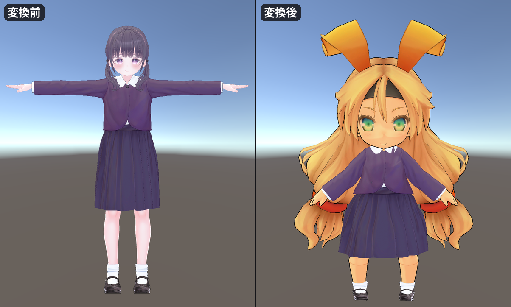
左が変換前、右が変換後です。変換後の脚は、仮の肌（元の服を隠したところに出す、肌の色の面）で、おぎなっています。仮の肌は、試しの機能です。かかった時間は、およそ 30 秒でした。どう測ったかは、下の「かかる時間」にあります。
くわしいやり方は、「はじめての練習」の章にあります。
気をつけること: 貫通（衣装が体に入ったところ）が、すべて消えるわけではありません。
実アバターで確認済み
市販の衣装を、自分のアバターに着せられる。
ほかのアバター用の衣装は、そのままでは着せられない。選ぶのは、衣装と変換先アバター（着せたいアバター）の 2 つです。［この設定で変換］を押します。元アバター（衣装がもともと合っているアバター）は、自動で調べます。骨（動きのもとになるところ）の位置合わせは、いりません。
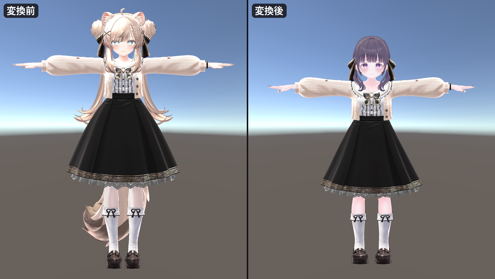
並べ方は、上と同じです。
くわしいやり方は、「はじめての練習」の章にあります。
気をつけること: どの衣装でもうまくいく、とは言えません。確かめたのは、アバターと衣装の 6 組だけです。元アバターを自動で見つけられたときの結果です。
実アバターで確認済み
変換で増えた貫通を、数で分けて読める。
着せたあとに、自動チェックが始まります。新しく増えた数と、元から入っていた数が別に出ます。［貫通確認］では、場所を色で見られます。
くわしいやり方は、「貫通の場所を確かめたい」の章にあります。
気をつけること: 体と服が一体（1 つのパーツになっている）のアバターがあります。その服の下の体は、おしはかって測ります。ずれることがあります。
実アバターで確認済み
ほかにできることは、「できること図鑑」にまとめました。
安心して試せます
元の服とアバターのデータは、そのまま残ります。あとから戻すこともできます。
変換では、元の服やアバターのファイルを書きかえません。
- すぐなら、Ctrl+Z で変換を取り消せます。
- あとからなら、［この変換を取り除く］を使えます。着せ直した衣装と、アバターに足した物を、まとめて外します。Unity を開き直したあとでも使えます。
- ひとつながりの元の服を隠したときも、戻せます。［元の服を表示に戻す］を使います。
Ctrl+Z で戻せないこともあります。［いま片付ける...］で消したファイルは、戻りません。Prefabへ部分の設定を足すときも、戻せません。
必要なもの
- Unity 2022.3.22f1。確かめた環境は、「入れ方」の章にあります。
- 着せたいアバターと、ほかのアバター用の衣装。
- VRChat SDK（VRChat で使うもの）は、なくても使えます。
- Modular Avatar（衣装をつけるのに使うもの）も、なくても使えます。
BOOTH のお店で、買うことができます。
かかる時間
時間は、衣装とパソコンで変わります。元アバターが見つかった6組で測りました。およそ30秒から4分半でした。測ったのは、GPU のない Linux の Unity です。
先に知っておく言葉
- 貫通（衣装が体に入ったところ）。
- Prefab（パーツをまとめた Unity のファイル）。
ほかの言葉は、「言葉の一覧」にもあります。
2 つ選んで、変換するだけ
ほかのアバター用の衣装は、そのままでは着せることができません。きがえ工房なら、2 つを選ぶだけで、自分のアバターに合うようにしてくれます。
選んで押すだけで、衣装が着られる。
ほかのアバター用の衣装を、自分のアバターに着せてみたい。選ぶのは、衣装と着せたいアバターの 2 つだけです。そのあと、［この設定で変換］を押します。元アバターは、自動で調べます。見つからないときは、衣装から合わせます。骨の位置合わせは、しなくてかまいません。ほとんどの衣装は、はじめの設定のままで変換することができます。あとは、できあがるのを待つだけです。画像の番号は、1 が［衣装］、2 が［変換先アバター（衣装を着せたいアバター）］です。その下に、元アバターを見つけた案内が出ます。実行ボタンは、下の欄にあります。
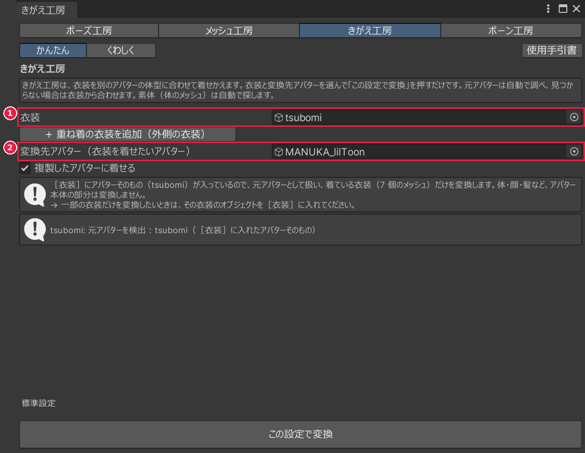
くわしいやり方は、「はじめての練習」の章にあります。
実アバターで確認済み
どれが体か、自動で見つけてくれる。
素体（アバターの体の部分）がどれなのか、分からない。素体は、自動で見つけてくれます。見つからないときは、手で選ぶこともできます。どうして選んだのかも、折りたたみの中で見ることができます。
くわしいやり方は、「画面の説明」の章にあります。
仕組みは動く
うまくいかないときも、直し方が分かる。
何がだめなのか分からないまま、失敗するのはこわい。骨の名前のつけ方が違っても、よくある名前なら、自動で合わせます。合わないときは、選んだらすぐ、直し方が案内に出ます。
くわしいやり方は、「はじめての練習」の章にあります。
仕組みは動く
着せていない衣装の Prefab も、使える。
まだ着せていない衣装の Prefab しか、持っていない。それでも、Prefab を［衣装］の欄に入れることができます。骨は、名前で合わせます。元アバターは、いりません。
くわしいやり方は、「衣装の Prefab を着せたい」の章にあります。
仕組みは動く
着ている服を、そのまま移せる。
アバターが着ている服を、別のアバターに移したい。着ている服の行を、ヒエラルキー（Unity の左にある、シーンにあるものの一覧）から［衣装］の欄へ入れます。元アバターは、自動で調べます。アバターそのものを［衣装］に入れると、着ている服をまとめて移せます。体・顔・髪は、変換しません。
くわしいやり方は、「はじめての練習」の章にあります。
気をつけること: 一部だけ移すときは、1 着ずつ入れます。重ねて着せたいときは、衣装の欄を増やします。
実アバターで確認済み
重ね着も、まとめて着せられる。
重ね着の衣装を、まとめて着せたい。欄を増やして、内側に着るものから、順に入れていきます。結果は、衣装ごとに、分かれて置かれます。
くわしいやり方は、「重ね着の衣装を着せたい」の章にあります。
仕組みは動く
腕の向きが違っても、そろえて変換する。
腕の向きが違うアバターでも、うまくいくのか心配になる。ポーズをそろえてから変換し、終わったら元のポーズに戻します。腕や脚の向きが大きく違うときは、そろえない場合とも比べて、形の崩れが少ないほうを使います。
くわしくの［微調整］の［姿勢をそろえてから変換する］です。はじめから、オンです。くわしいやり方は、「画面の説明」の章にあります。
気をつけること: 腕や脚の向きが大きく違うと、時間がおよそ 2 倍かかります。
実アバターで確認済み
体型や頭身の違うアバターへ
体型がちがうと、ほかのアバター用の衣装は、合わないことが多いものです。きがえ工房は、着せたいアバターの体に合うように、形を直してくれます。
体型が違っても、体に合わせて直せる。
体型がちがうアバターに着せると、ぶかぶかになったり、体に入り込んだりする。着せたいアバターの体に合うように、形を直します。体とのすき間（体と衣装の間のあき）は、めやすとして、たもちます。
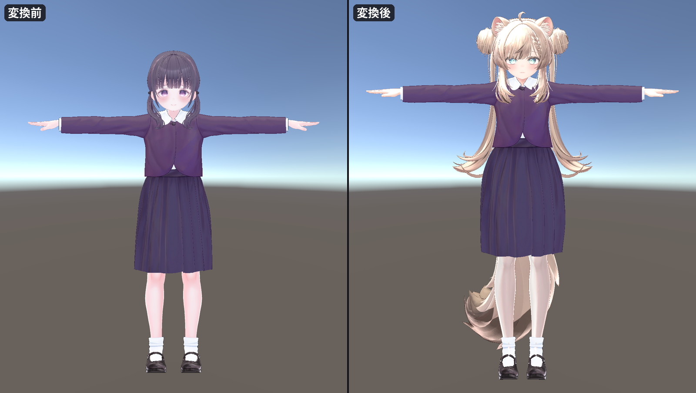
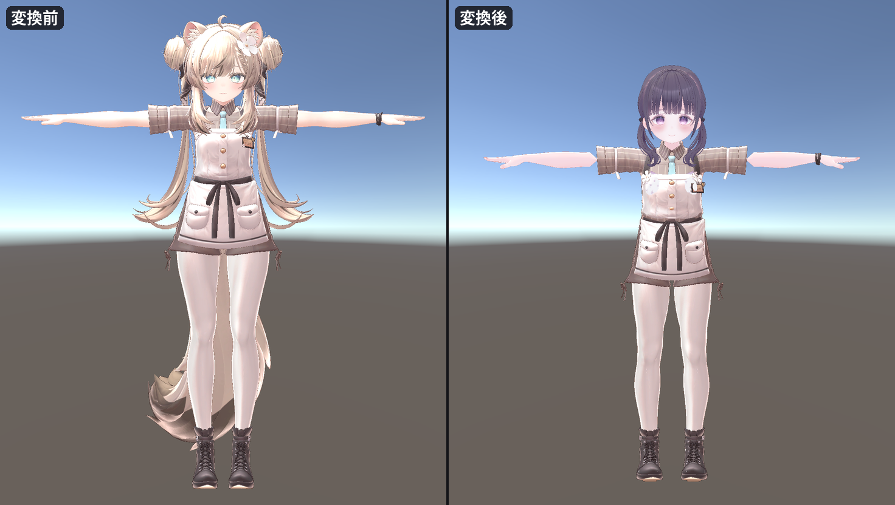
どちらも、左が変換前、右が変換後です。上と下は、べつの組です。
すき間は、自分で変えることもできます。設定の［すき間の最小値 (mm)］と［元のすき間の倍率］を使います。くわしいやり方は、「食い込みやぶかぶかを直したい」の章にあります。
気をつけること: どの衣装でもうまくいく、とは言えません。確かめたのは、アバターと衣装の 6 組だけです。元アバターを自動で見つけられたときの結果です。
実アバターで確認済み
頭の大きなアバターにも、着せられる。
背が低くて、頭の大きいアバターにも、衣装を着せたい。着せたいアバターの体に合うように、大きさと形を直します。頭身がちがっても、合わせることができます。気になるところは、あとで直すこともできます。
左が変換前、右が変換後です。変換後の脚は、仮の肌（元の服を隠したところに出す、肌の色の面）で、おぎなっています。仮の肌は、試しの機能です。
くわしいやり方は、「はじめての練習」の章にあります。仮の肌は、「体と服が一体のアバターにも」の章にあります。
気をつけること: 体と服が一体のアバターは、服の下の体を、おしはかります。ほんとうの体とは、ちがうことがあります。
実アバターで確認済み
胸の上の骨（UpperChest）の違いは、自動で合わせてくれる。
アバターによって、胸の上の骨（UpperChest）が、あったり、なかったりする。片方にしかなくても、自動で足してくれます。こちらですることは、ありません。自分で、骨を足さなくてかまいません。
変換の前の案内に出ますが、直さなくてかまいません。
仕組みは動く
体を縮めるシェイプキーがあっても、合わせられる。
体を縮めるシェイプキー（形を変える設定）があると、うまく合わないのでは。縮めるキーは、0 として、合わせます。自分で、0 にしなくてかまいません。確かめるときも、同じ調べ方で数えます。
確かめるときの条件は、変換と同じように縮めるキーを 0 として調べます。手動で調べるときは、この条件を変えられます。くわしいやり方は、「画面の説明」の章にあります。
気をつけること: 縮めるキーとみなすのは、名前に「Shrink」か「縮」が入ったキーです。「__Shrink__」のような区切りの下に並ぶキーも、同じです。
仕組みは動く
着せたあとを、自動で確かめる
着せたあと、服が体に入っていないかを調べてくれます。見た目は、Sceneビューで確かめます。アバターと服を、目で見ます。
着せ終わると、すぐ調べてくれる。
肌が服をつきぬけていないか、心配になる。ボタンを押さなくても、着せ終わると、自動チェックが始まります。止まったときと、8つのポーズで調べます。体に入り込むところが増えたか分かります。
まとめは、「結果」の欄に出ます。くわしいやり方は、「画面の説明」の章にあります。
実アバターで確認済み
増えたところと、もともとのところを分ける。
元の服でも体に入っていた頂点（形を作る点）があります。自動チェックでは、その数も出します。新しく増えた分とは分けています。どこが入ったかは、［貫通を確認］で見ます。
着せたすぐあとに、数が出ます。欄の名前は「結果」です。くわしい読み方は、「数の読み方」に続きます。
気をつけること: 元の服にもともとある穴やめり込みは、直しません。体と服がひとつながりのアバターでは、服の下の体をおしはかって測ります。ほんとうの体とは、ちがうことがあります。
実アバターで確認済み
座ったときも、どれくらい入り込むか分かる。
自動チェックは、8つのポーズを調べます。いちばん多いポーズの名前と割合も出します。見た目は、［ポーズで確認］の表から見られます。［表示］で、そのポーズを取ります。
くわしいやり方は、「貫通の場所を確かめたい」の章にあります。
気をつけること: 腕と胴のように、体どうしが重なるポーズの貫通は、直せません。8 つのポーズ以外は、試していません。
実アバターで確認済み
試した6組では、止まったときのめり込みは増えなかった。
でき上がりが、気になる。試した6組は、手に入るアバターと服です。測ったのは、元アバターが見つかったときです。止まったときに増えたところは、どれも0でした。8 ポーズの貫通は、5 組で元の服より少なく、残りの 1 組も、ほぼ同じでした。
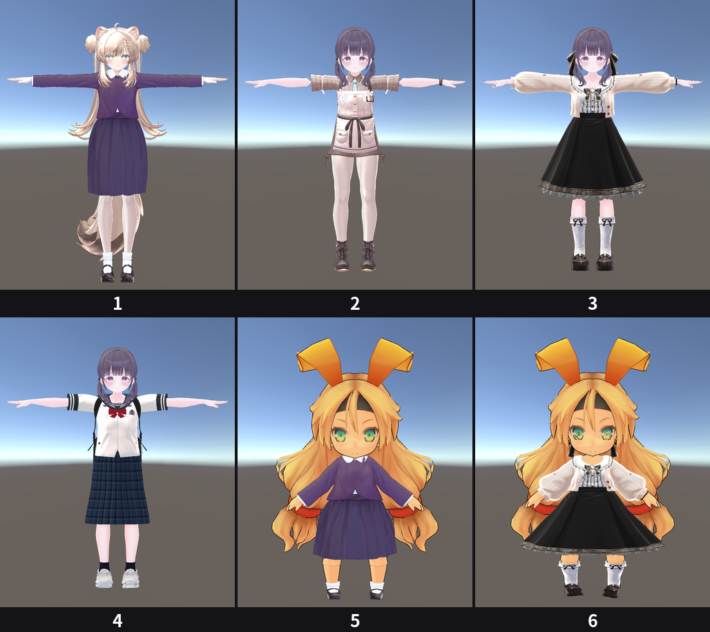
数えたのは、体の中に 1 mm より深く入った頂点（形を作る点）です。もともと入っていたところは、数えていません。体と服がひとつながりの2組は、おしはかった体で測りました。元の服は、元アバターに着せて比べました。
気をつけること: 試したのは、この 6 組だけです。この8つのポーズは、服を合わせるときにも使います。画面の自動チェックとは数え方がちがうので、数は同じになりません。
実アバターで確認済み
着せたらすぐに、数が見られる。
自動チェックは、着せたすぐあとに行います。開き直したあとは、［貫通確認］で調べ直せます。着せ直さなくてもかまいません。
動いたときの服
腕や脚を動かすと、服の形は、止まっているときよりくずれやすいものです。きがえ工房は、動いたときのことも考えて、形を整えます。
動いても、衣装が体に入りにくい。
腕や脚を動かすと、体に入ったり、のびたりする。着せたいアバターの体と同じように、衣装が動くようにします。ウェイト（衣装が、骨の動きにどれだけついていくかの割合）を、体から写すからです。さけたようにのびるところは、元の服の動き方に近づけます。
自動チェックは、8ポーズを調べます。見た目は、［貫通確認］で確かめます。表の［表示］で、好きなポーズを見られます。
設定の［ウェイトを移す］を使います。はじめから、オンです。くわしいやり方は、「画面の説明」の章にあります。
気をつけること: 腕と胴のように、体どうしが重なるポーズの貫通は、直せません。
実アバターで確認済み
いろいろなポーズを試して、入りにくい動き方を選ぶ。
スカートの前が、脚を上げると体に入る。腕や脚を動かして、いろいろなポーズを試します。そして、スカートが体に入りにくいウェイトの候補を選びます。立った姿の形は、変えません。
くわしくの［貫通対策］の［ポーズを考えてウェイトを調整する］を使います。はじめから、オンです。くわしいやり方は、「画面の説明」の章にあります。
気をつけること: 選ぶのに使うのは、動く範囲に散らした、決まった 8 つのポーズです。自動チェックの 8 つのポーズとは別です。ほかの動きは、Unity のアニメーションやポーズ確認で目で確かめてください。
実アバターで確認済み
頭の飾りが、ずれにくい。
頭の飾りが、ずれたり、ゆがんだりする。頭だけに付くパーツは、頭と髪の面、目の高さに合わせて置きます。飾りの形は、保ったまま動かします。
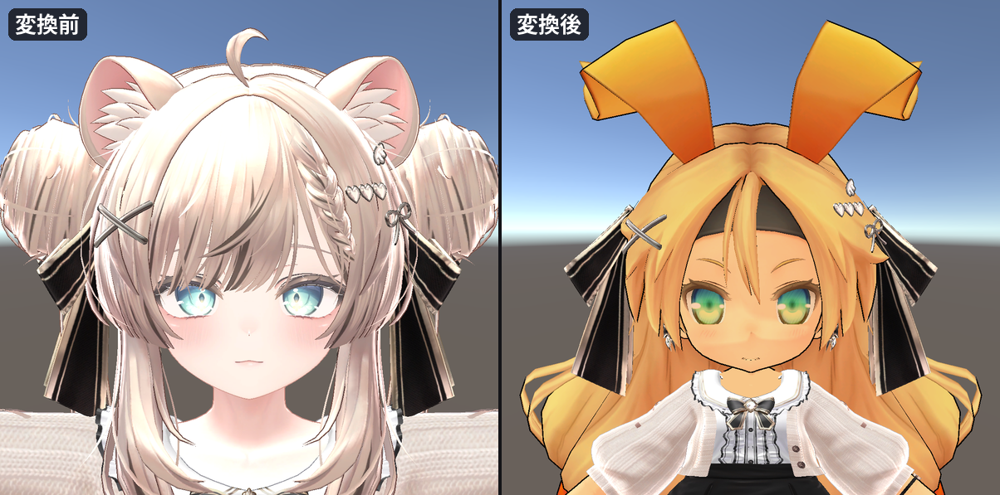
左が変換前、右が変換後です。飾りは、髪の上で、目より高いところにあります。
設定は、いりません。変換のときに、自動で置かれます。
気をつけること: 形を保つので、頭のまるみが大きく違うと、はしが少し浮くことがあります。頭の大きなアバターでは、耳飾りが大きくなり、腕を上げると肩に入ることがあります。
実アバターで確認済み
体と服が一体のアバターにも
体と服が一体のアバターにも、着せられます。変換のあとで、元の服をどうするかも、選ぶことができます。
体と服が一体でも、着せられる。
体と服が一体のアバターには、着せられないと思っていた。こちらで調べなくても、自動で見分けます。服の下の体を、おしはかって、合わせます。
くわしくの［衣装変換］にある［自動判定の確認と修正］の［体と服が一体のアバター］で、選べます。はじめは、自動です。
気をつけること: おしはかった体は、ほんとうの体と、ちがうことがあります。細くおしはかると、貫通の数は、少なめに出ます。数だけでなく、シーン（アバターなどがある 3D の場所）ビューで、目でも確かめてください。服のない体が、別にあるときは、それを素体の欄に入れます。そして「推定しない」を選ぶこともできます。
実アバターで確認済み
元の服を隠して、脚や腕も、おぎなえる。
元の服が、衣装と重なって見える。ボタンを押すと、元の服だけが、見えなくなります。隠して消えた脚や腕は、おぎなえます。
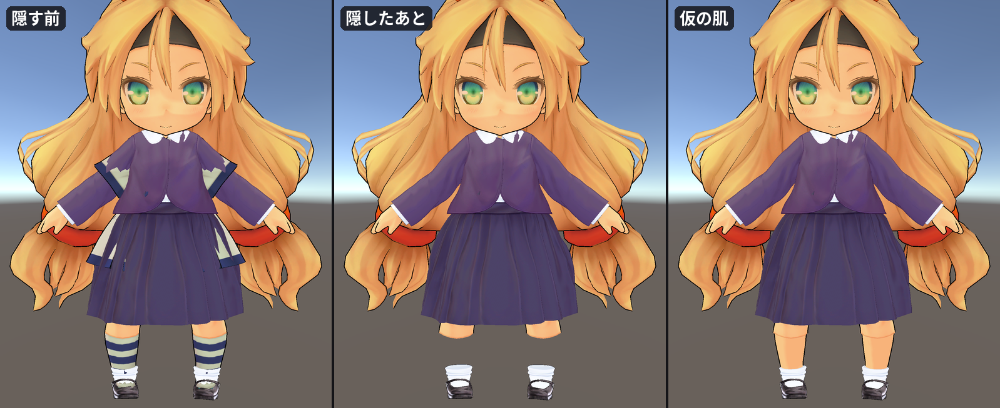
左から、隠す前、隠したあと、仮の肌です。
押したあとも、Undo（Ctrl+Z で戻す操作）で、元に戻すことができます。元の服そのものは、こわしません。
隠すだけのときは、結果欄の［変換先の元の服を隠す（Undoで戻す）］を押します。仮の肌（元の服を隠したところに出す、肌の色の面）も出すときは、［元の服を隠して仮の肌を表示（試験的・Undoで戻す）］を押します。どちらも、変換のあとに、押すことができます。隠した服は、［元の服を表示に戻す］でも戻せます。このボタンは、隠したときだけ出ます。くわしいやり方は、「体と服が一体のアバターに着せたい」の章にあります。
気をつけること: 仮の肌は、試しの機能です。顔・指・足先は、おぎなえません。もようや質感は、戻りません。見た目を見るだけに使います。貫通を調べるときには、使いません。
実アバターで確認済み
一部だけ、設定を変える
服の一部だけ、変え方を決められます。そんなときは、その部分だけに、べつの設定をつけられます。
部分は、いろいろなやり方で選べる。
どうやって、一部だけを選ぶのか、分からない。選び方は、3 つあります。マテリアル（色や質感を決める設定）ごとに、選べます。マスク画像（白と黒で、選ぶところを示した絵）でも、選べます。ブラシ（なぞって塗るもの）は、シーンビュー（3D の景色を見るウィンドウ）で使います。
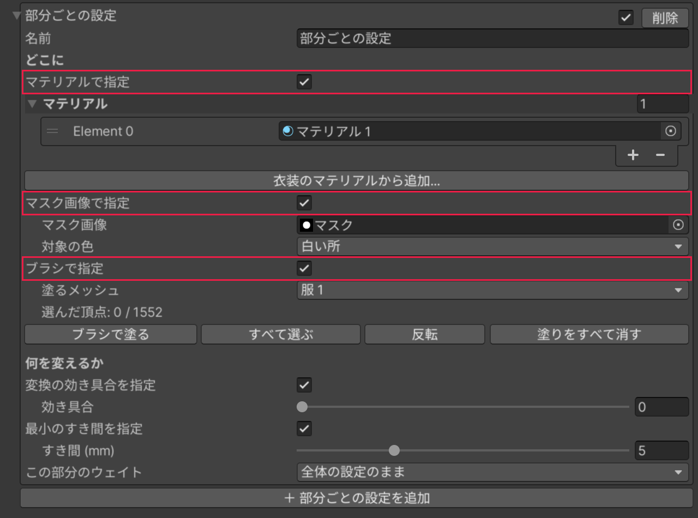
くわしくの［微調整］で、部分の設定を足せます。Inspector の Add Component（設定のパーツを足すボタン）からも足せます。名前は「きがえ工房 > Cloth Mask」です。その「どこに」で、［マテリアルで指定］［マスク画像で指定］［ブラシで指定］から選びます。くわしいやり方は、「一部だけ、形を変えたくない」の章にあります。
気をつけること: ブラシで塗るときの、マウスの感じは、まだ確かめていません。塗る・消す・Ctrl+Z で戻す仕組みは、確かめました。
仕組みは動く
一部だけ、すき間を大きくできる。
一部だけ、体に食い込んでしまう。たとえば、ひざや胸の先です。その部分だけ、すき間を大きくできます。選んだ部分だけに、効きます。ほかのところは、いつもどおりです。
部分の設定の「何を変えるか」で、すき間の項目をオンにします。そして、［すき間 (mm)］を変えます。くわしいやり方は、「一部だけ、形を変えたくない」の章にあります。
仕組みは動く
変換し直しても、設定はそのまま。
変換し直すたびに、設定を作り直すのは、めんどうです。部分ごとの設定は、衣装に残ります。だから、変換し直しても、そのまま使われるのです。
くわしいやり方は、「取り消したい・変換し直したい」の章にあります。
気をつけること: Prefab（パーツをまとめた Unity のファイル）に、部分ごとの設定を直接つけると、そのファイルが変わります。ウィンドウから付けるときは、確認の窓が出ます。ファイルを変えたくなければ、シーンに置きます。置いた服に付けます。
仕組みは動く
仕掛けや揺れ物も、引き継ぐ
動くかざりや、ゆれるものが付いた衣装も、あります。どちらも、変換のあとの衣装に、うつします。ゆれるものは、VRChat SDK があるときだけです。
動くかざりの仕掛けも、引き継ぐ。
アニメーションで動くかざりが、変換でこわれるのでは。アニメーションが指す先を、新しい衣装に合わせて直します。たとえば、時計のはりのアニメーションです。変換のあとも、同じパーツを指します。
左が変換前、右が変換後です。
設定は、いりません。変換のときに、自動で直ります。はじめから、使えます。
気をつけること: はりが回るのを見たのは、確かめ用の簡単な形だけです。実アバターの衣装では、指す先が見つかることまで確かめました。変換のあと、Unity で再生して確かめます。
実アバターで確認済み
ゆれ物の設定を、付け直してくれる。
PhysBone（髪や服をゆらすパーツ）の設定を、付け直したくない。VRChat SDK があれば、同じ骨に付け直します。骨がのび縮みした分は、半径も直します。
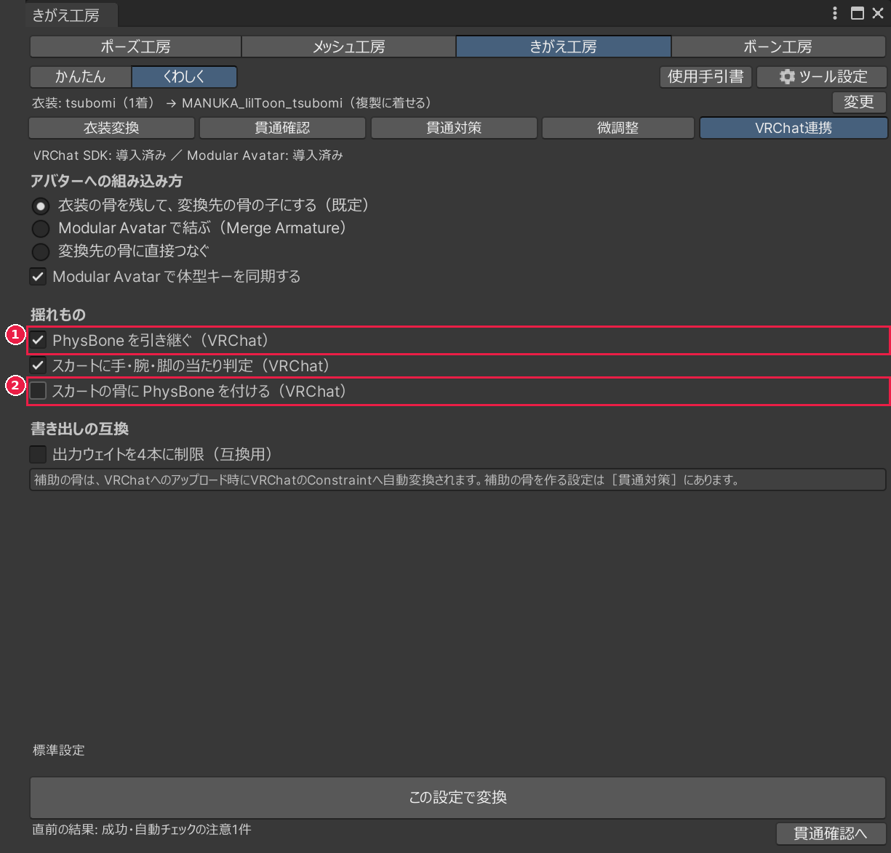
くわしくの［VRChat連携］を開きます。［PhysBone を引き継ぐ（VRChat）］を使います。はじめから、オンです。VRChat SDK が無いと、この項目は出ません。
気をつけること: VRChat の中でのゆれ方は、確かめていません。確かめたのは、設定した値と、置いた位置までです。確かめた VRChat SDK は、3.10.5 だけです。ほかの版は、確かめていません。
実アバターで確認済み
スカートに、ぶつかるところを足せる。
VRChat の中で、スカートに手や脚がめり込む。スカートの PhysBone に、コライダー（ぶつかるところを決めるパーツ）を足します。足すのは、手・前腕・太ももの分です。
くわしくの［VRChat連携］を開きます。［スカートに手・腕・脚の当たり判定（VRChat）］を使います。はじめから、オンです。
気をつけること: スカートが押し出される見た目は、確かめていません。下ろした手が入るのは、ウェイトの調整では、直りません。足すと、アバター全体の数が増えることがあります。パフォーマンスランク（アバターの重さの目安）は、保証できません。
仕組みは動く
VRChat SDK が無くても、使える。
VRChat SDK や Modular Avatar が無くても、使いたい。どちらも無くても、変換と確認は、すべて使えます。そのままで、だいじょうぶです。Modular Avatar があると、体型キーを、アバターと自動でそろえます。VRChat SDK があると、PhysBone などの項目が出ます。
くわしくの［VRChat連携］を開きます。［Modular Avatar で体型キーを同期する］を使います。Modular Avatar がなければ、灰色になります。そのときは、体型キーを手でそろえます。衣装の骨は、［衣装の骨を残して、変換先の骨の子にする（既定）］で、アバターの骨の子になります。Modular Avatar は、いりません。くわしいやり方は、「Modular Avatar や PhysBone と使いたい」の章にあります。
気をつけること: 確かめた Modular Avatar は、1.18.7 だけです。ほかの版は、確かめていません。
実アバターで確認済み
Unity の布の設定も、引き継ぐ。
Cloth（Unity で布をゆらすパーツ）の設定も、うつします。設定は、いりません。
安心して試せる
元の服とアバターのデータは、そのまま残ります。いつでも元に戻せます。
できた衣装は、新しく作る、べつのものです。元の服やアバターのファイルは、書きかえません。
- すぐなら、Ctrl+Z で変換を取り消せます。
- あとからでも、［この変換を取り除く］で戻せます。着せ直した衣装と、変換でアバターに足した物を、まとめて取り除きます。
- ひとつながりの元の服を隠したときも、戻せます。［元の服を表示に戻す］を使います。
気をつけること: Prefab のファイルに、部分ごとの設定を直接つけると、そのファイルが変わります。ウィンドウから付けるときは、確認の窓が出ます。ファイルを変えたくなければ、シーンに置きます。置いた服に付けます。
元のものは、変えない。
大事な衣装やアバターを、こわしたくない。できあがった衣装は、新しく作られて、アバターの中に置かれます。元のものは、そのままです。
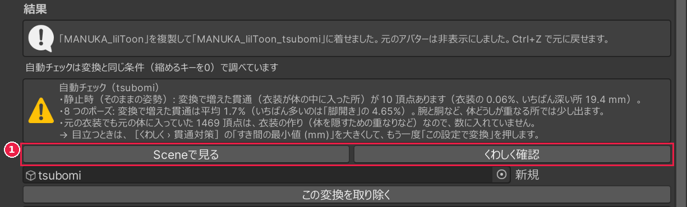
できあがると、「結果」の欄に、そう書いてあります。
実アバターで確認済み
失敗しても、Ctrl+Z で戻せる。
失敗したら、元に戻したい。変換のすぐあとなら、Ctrl+Z を 1 回押します。それで、まとめて取り消されます。作った骨も、いっしょに消えます。気にせず、なんどでも試せます。
あとから戻すときは、変換した衣装を選びます。インスペクター（ものの設定が出るウィンドウ）の［この変換を取り除く］を押します。Unity を開き直したあとでも使えます。取り除いたあとも、Ctrl+Z で取り消せます。
実アバターで確認済み
前のものを、残しておける。
何度も変換し直すと、できあがりが増えて、散らかる。同じ衣装を、同じアバターに変換し直すと、前のものと入れかわります。残したいものには、印を付けられます。
できた衣装を選ぶと、インスペクターに、変換の記録（変換した衣装に付く、印のパーツ）が出ます。名前は「Converted Outfit Record (Script)」です。そこで、［変換し直しても残す］をオンにします。
仕組みは動く
いらないファイルは、自動で片付く。
使わなくなったファイルが、たまっていく。使われなくなったファイルは、自動で片付きます。いま片付けることも、できます。
一番下の［変換で作ったファイルの片付け］で、［いま片付ける...］を押します。消す前に、数を見せてくれます。
気をつけること: ［削除する］で消したファイルは、戻りません。［Undo の履歴も消して片付ける］を選ぶと、Undo の履歴も、すべて消えます。Unity を開いてから作ったものは、次に開くまで、残ります。
仕組みは動く
失敗しても、途中のものは残らない。
うまくいかなかったとき、途中のものが残るのでは。途中でだめになったら、置いたものも取り消して、シーンには何も残しません。もう一度、変換できます。
「変換中にエラーが起きました」と出ます。
仕組みは動く
ほかの小さな便利
- アバターをどこに置いても、どちらを向いても、衣装は同じ位置です。
- シェイプキーは、名前も形も、いまの値も、そのまま残ります。
- くわしくの［⚙ツール設定］の［保存先フォルダ］で、保存先を変えられます。
- くわしくの［⚙ツール設定］の［設定を既定値に戻す］で、設定をはじめの値に戻せます（保存先フォルダは、そのままです）。
苦手なこと
きがえ工房にも、苦手なことがあります。買う前に、ここで確かめてください。
変換のしあがり
- 元の服の穴や食い込みは、直せません。自動チェックでは元から体に入っていた頂点数を別に示します。場所は、［貫通確認］で色を出して見られます。
- 体と服が一体のアバターの服だけを、ほかへ移せません。ほかの衣装を着せることは、できます。
- 色や模様は、変えません。マテリアルの設定で直します。
- 新しい衣装は、作れません。もっている衣装を、ほかの体型に合わせるものです。
- 貫通が、すべて消えるわけではありません。試した例では、そでぐちやくつに、少し残りました。［すき間の最小値 (mm)］を大きくするか、部分ごとの設定で直します。
- 腕と胴のように、体どうしが重なるポーズの貫通は、直せません。自動チェックで数を見ます。ポーズの見た目は、［貫通確認］で確かめます。
- 体と服が一体のアバターの、服の下の体は、おしはかったものです。貫通の数は、少なめに出ることがあります。目でも確かめます。
- 仮の肌は、試しの機能です。顔・指・足先は、おぎなえません。見た目の確認だけに使います。
- どの衣装でもうまくいく、とは言えません。確かめたのは、アバターと衣装の 6 組だけです。元アバターを自動で見つけられたときの結果です。変換後に、自動チェックと目で確かめます。
- 8 つのポーズのチェックは、決まった 8 つだけを見ます。ほかのポーズは、目で確かめます。腕や脚の向きをそろえるかは、すべての衣装で同じです。1 着ずつ変換して、くらべます。
- 頭の飾りは、形をたもったまま動かします。頭のまるみが大きく違うと、はしが少し浮きます。Unity で、位置を直します。
- 頭の大きなアバターでは、みみかざりが大きくなります。腕を上げると、かたに入ることがあります。そのポーズをさけるか、Unity で飾りの大きさや位置を直します。
VRChat の中
- VRChat の中でのゆれ方や、おし出される見た目は、確かめていません。アップロード前に、VRChat SDK で確かめます。
- 下ろした手がスカートに入るのは、ウェイトでは直りません。VRChat SDK があれば、ぶつかるところを足す項目を、オンにします。足すと数が増え、パフォーマンスランクは保証できません。
- 動くかざりの仕掛けは、変換のあと、Unity で再生して確かめます。
使えないもの
- Humanoid（人型の骨の設定）がないアバターは、変換できません。モデルの［Rig］タブで、Humanoid にします。
- 骨で動かない衣装は、変換できません。骨の付いた衣装を使います。
- ファイルのままのアバターは、変換先にできません。ヒエラルキー（Unity の左にある、シーンにあるものの一覧）に置いて、入れます。
時間・場所・配るとき
- 変換中は、Unity を使えません。元アバターを自動で見つけられたとき、スカートつきの重い衣装は、およそ 4 分半かかりました（GPU のない Linux の Unity）。腕や脚の向きが大きく違うと、およそ 2 倍かかります。
- 動作を確かめた環境は、「入れ方」の「動作を確かめた環境」にまとめました。
- VRChat へのアップロードと、VCC（VRChat 用のアプリ）での入れ方は、確かめていません。ブラシで塗るときの、マウスの感じも、確かめていません。
- 着せ直した衣装は、元のデータから作ります。たいていの規約は、手を加えたデータを配ることを、みとめていません。自分で使い、配るまえに、規約を確かめます。
悩みから探す
こまっていることから、できること図鑑を探せます。近いものが見つかったら、その行を押してください。そのカードに進みます。見出しを押すと、その章に進みます。
着せるまでを、かんたんに
- ほかのアバター用の衣装を、自分のアバターに着せたいとき。
- どれが体なのか、わからないとき。
- 失敗する前に、直し方を知りたいとき。
- まだ着せていない衣装の Prefab で、変換したいとき。
- 着ている服を、そのまま移したいとき。
- 重ね着の衣装を、まとめて着せたいとき。
- 腕の向きがちがうアバターでも、着せたいとき。
体型や頭身がちがうとき
- 体型がちがって、ぶかぶかになったり、食い込んだりするとき。
- 頭の大きなアバターにも、着せたいとき。
- 胸の上の骨（UpperChest）が、片方のアバターにしかないとき。
- 体を縮めるシェイプキーが、あるとき。
着せたあとを、確かめたい
- 体が服をつきぬけていないか、調べたいとき。
- つきぬけている場所を、知りたいとき。
- 元の服のせいか、変換のせいかを、知りたいとき。
- 座ったときの貫通を、確かめたいとき。
- 変換のできばえを、知りたいとき。
- Unity を開き直したあとも、確かめたいとき。
動いたとき
体と服が一体のアバター
一部だけ変えたい
仕掛けやゆれ物
- 動くかざりの仕掛けを、残したいとき。
- PhysBone の設定を、付け直したくないとき。
- スカートに手や脚が、めり込むとき。
- Modular Avatar と使いたいとき。
- VRChat SDK が無くても、使いたいとき。
- Unity の布（Cloth）の設定を、残したいとき。
安心して試したい
苦手なこと
- できないことを、先に知りたいとき。
Unity の基本の操作
Unity をはじめて使う人のための章です。この手引書で使う操作だけを書きます。知っている人は、「入れ方」へ進んでください。
プロジェクトを開く
プロジェクト（Unity で作業するフォルダ）は、Unity Hub から開きます。Unity Hub は、Unity を起動するアプリです。左の「Projects」に、プロジェクトが並びます。名前を押すと、そのプロジェクトで Unity が開きます。アバターを入れてあるプロジェクトを使います。
新しく作るときは、Unity Hub の「New project」を押します。版は 2022.3.22f1 を選びます。一覧に無いときは、左の「Installs」で、その版を入れます。ひな形は、「3D」のものを選びます。
アバターを入れる
買ったアバターは、unitypackage（Unity に入れるファイル）で配られます。入れ方は、「入れ方」の「Unity に入れる」と同じです。アバターの説明書があるときは、その手順にしたがいます。
入れると、Project ウィンドウに Prefab が増えます。何個もあるときは、説明書に書いてある物を使います。書いていなければ、名前がアバターの名前の物を使います。
画面の場所
はじめの並び方では、次の場所にあります。
- メニューバー: 画面のいちばん上の行です。きがえ工房を入れると、［Tools］が増えます。
- ヒエラルキー（Hierarchy）: 左です。シーンにあるものの一覧です。
- シーンビュー（Scene）: まん中です。上のタブに「Scene」と出ています。
- インスペクター（Inspector）: 右です。選んだものの設定が出ます。
- Project ウィンドウ（Project）: 下です。ファイルが並びます。
- Console（知らせが出るウィンドウ）: Project のとなりのタブです。
ウィンドウを閉じてしまっても、だいじょうぶです。メニューの［Window > General］から出せます。シーンビューなら、［Window > General > Scene］です。
マウスとキーの操作
- ドラッグ: 左ボタンを押したまま動かします。行き先で離します。
- スクロール: ホイールを回すと、ウィンドウが上下に動きます。
- 寄る: ヒエラルキーで、行をダブルクリックします。シーンビューが、そのものに寄ります。
- キーで寄る: ヒエラルキーで、行を 1 回押して選びます。シーンビューにマウスを置いて、F キーを押します。選んだものに寄ります。
- 向きを変える: シーンビューで、右ボタンを押したまま動かします。
- 近づく・離れる: シーンビューで、ホイールを回します。奥へ回すと近づき、手前へ回すと離れます。
- まとめて選ぶ: Ctrl キーを押したまま、行を 1 つずつ押します。もう一度押すと、その行は外れます。
体と服が別のパーツか見分ける
ヒエラルキーで、アバターの行を見つけます。左の三角を押して、中を開きます。置き方は、「はじめての練習」の手順 1 にあります。中の行を 1 つずつ押して、シーンビューのふちを見ます。ふちが服だけに付く行があれば、別のパーツです。体と服が、いつもいっしょに囲まれるなら、一体です。
取り消す
Ctrl+Z を押すと、さいごの操作から 1 つずつ取り消します。Ctrl+Y を押すと、取り消した操作が戻ります。きがえ工房の操作にも、効きます。
この手引書は、Windows のキーで書いています。Mac では、Ctrl キーは command キーです。Ctrl+Y は command+shift+Z です。F2 キーは Enter キーです。
入れ方
きがえ工房を Unity に入れます。手に入れる、Unity に入れる、入ったことを確かめる、の順です。Unity がはじめての人は、先に「Unity の基本の操作」を読みます。
手に入れる
BOOTH で買います。ZIP のファイルをダウンロードします。
ZIP を解凍します。Windows では、ZIP を右クリックします。「すべて展開」を選びます。Mac では、ZIP をダブルクリックします。中に unitypackage（Unity に入れるファイル）があります。名前の例は KigaeKoubo_v1_0_0.unitypackage です。うしろに版の番号が付きます。番号は、画像とちがってもかまいません。
Unity に入れる
先に、使うプロジェクトを Unity で開きます。開き方は、「Unity の基本の操作」にあります。Unity は、開いたままにします。
取り込み先は Assets/GP12_KigaeKoubo です。前の版が入っていたら、先に読みます。「新しい版に入れ替える」を読みます。
unitypackage は、パソコンのフォルダの画面にあります。Windows ならエクスプローラー、Mac なら Finder です。そこで、手順 1 のダブルクリックをします。
-
unitypackage をダブルクリックします。取り込むファイルの一覧が出ます。
-
窓の右下の［Import］を押します。一覧のチェックは、付けたままにします。
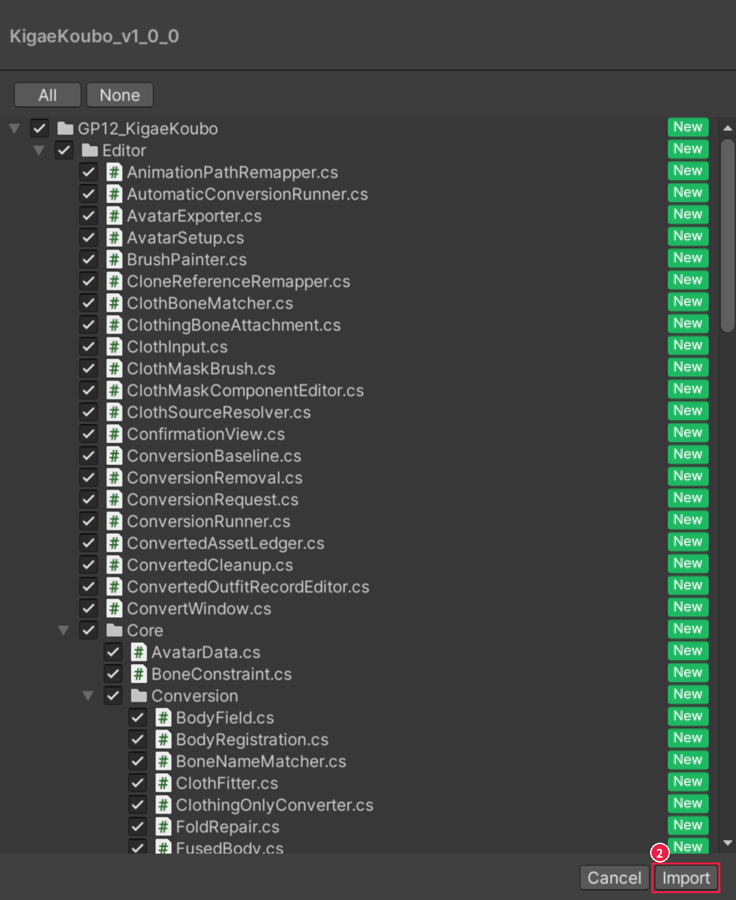
-
読み込みが終わるまで、待ちます。進み具合の窓や、右下の回る印が消えるまで、待ちます。
窓が出ないときは、別のやり方があります。メニューの［Assets > Import Package > Custom Package...］を選びます。そのあと、unitypackage を選びます。
入ったことを確かめる
-
Project ウィンドウの左の一覧で、「Assets」を押します。右に本体のフォルダが出ます。名前は「GP12_KigaeKoubo」です。右上の検索欄でも探せます。
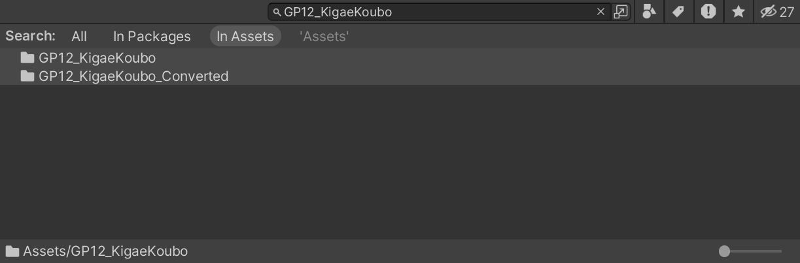
画像は、すでに変換した結果があるプロジェクトの例です。「GP12_KigaeKoubo_Converted」は変換結果の保存先です。入れた直後は、この結果フォルダがなくても問題ありません。
-
メニューバーの［Tools > Kigae Koubo > Open］を選びます。
ほかの工房を開いているときは、いちばん上の［きがえ工房］からも開けます。
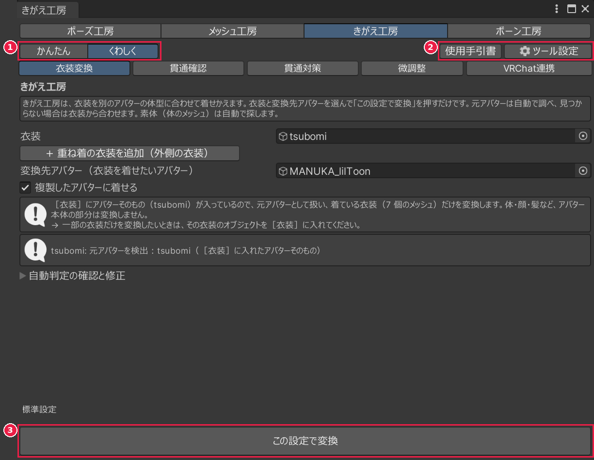
-
出たウィンドウの上に、「きがえ工房」と出ているか確かめます。
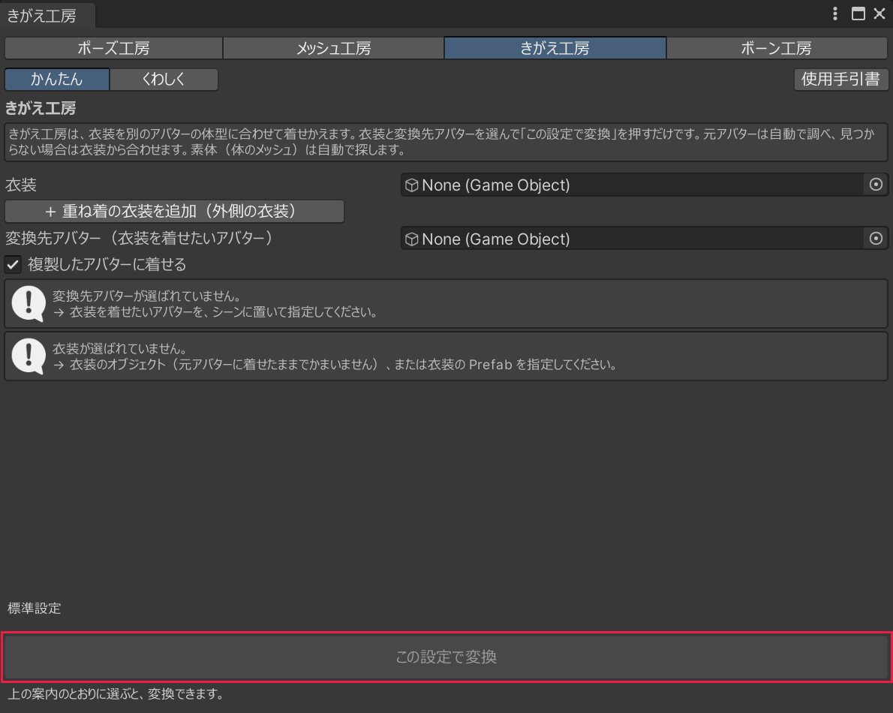
ウィンドウが出れば、入っています。はじめは、白いふきだしの案内が 2 つ出ます。まだ何も選んでいないためで、エラーではありません。［Tools］が出ないときは、「困ったとき」を見てください。
動作を確かめた環境
きがえ工房は、次の環境で確かめました。
- Unity 2022.3.22f1。
- パソコン: Linux（Ubuntu）と、Windows 11。
- VRChat SDK 3.10.5。Modular Avatar 1.18.7。
Mac では、まだ確かめていません。VCC（VRChat 用のアプリ）は、いりません。VCC で作ったプロジェクトへの入れ方は、まだ確かめていません。
Unity の版は、Unity Hub の一覧で分かります。
なくても使えるもの
VRChat SDK と Modular Avatar は、なくても使えます。あると、使える項目が増えます。「Modular Avatar や PhysBone と使いたい」の章を見ます。
新しい版のときは、「新しい版に入れ替える」を見ます。
新しい版に入れ替える
新しい版を入れるときは、古いフォルダを先に消します。消さないと、いらなくなったファイルが残ることがあります。はじめて入れる人は、この章はいりません。
古いフォルダを消す
先にプロジェクトをバックアップします。ツールのフォルダに、自分の服を置いていませんか。置いてあれば、先に外へ移します。
-
Project ウィンドウの左の一覧で、「GP12_KigaeKoubo」を選びます。「GP12_KigaeKoubo_Converted」は残します。
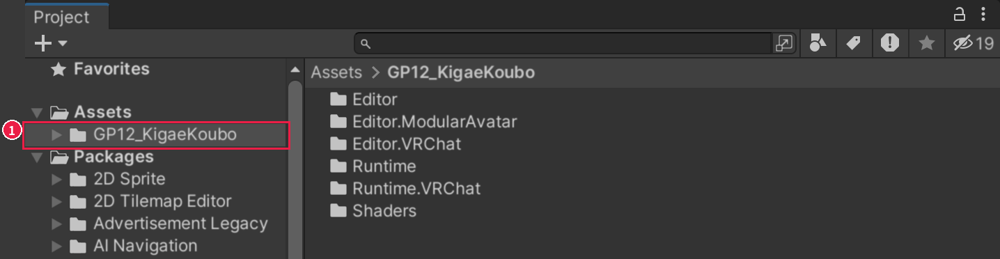
-
キーボードの Delete キーを押します。
-
確認の窓が出たら、［Delete］を押します。
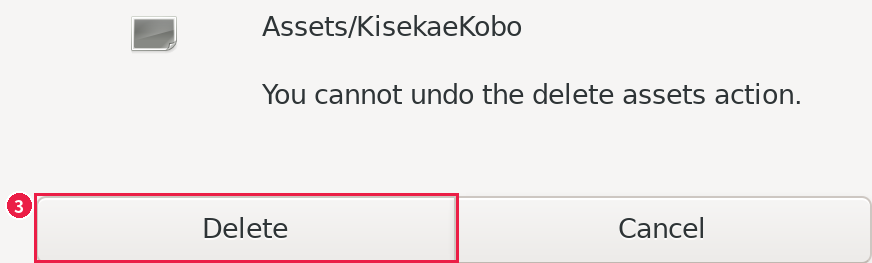
新しい版を入れる
新しい版は、「入れ方」の章と同じに入れます。入れ直したあと、赤い「CS2001」が出ることがあります。そのときは、Unity を開き直します。くわしくは、「困ったとき」にあります。
変換の結果は残ります
できた衣装は、別のフォルダに入ります。名前は「GP12_KigaeKoubo_Converted」です。このフォルダは、消さないでください。消すのは、製品のフォルダ「GP12_KigaeKoubo」だけです。入れ替えても、前のできた衣装は消えません。
はじめての練習
元アバター（衣装がもともと合っているアバター）が着ている衣装を、着せたいアバターに着せます。選ぶのは、［衣装］と［変換先アバター（衣装を着せたいアバター）］の 2 つです。この練習では、元アバターをまるごと入れます。体や顔や髪は、移しません。
使うアバター
まず、アバターを 2 体用意します。どちらも、Humanoid（人型の骨の設定）のアバターを使います。元アバターは、体と服が別のものを使います。Humanoid でないときは、ウィンドウに案内が出ます。
アバターの Prefab は、Project ウィンドウにあります。青い箱の印が付いた、アバターの名前のファイルです。選び方は、「Unity の基本の操作」にあります。
変換する
はじめは、［複製したアバターに着せる］がオンです。Bのコピーを作って着せます。元のBは隠れます。この練習では、コピーしたBを見ます。
ウィンドウがヒエラルキーにかぶったら、上の帯でずらせます。入りきらないときは、ホイールで上下に動かせます。
-
2 体の Prefab を、1 体ずつヒエラルキーへドラッグします。2 体は、重なって見えることがあります。
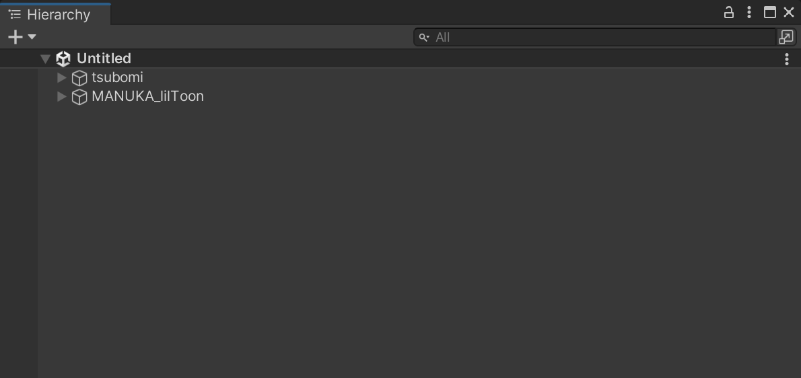
-
メニューバーの［Tools > Kigae Koubo > Open］を選びます。ウィンドウが出ます。白いふきだしの案内が 2 つ出て、［この設定で変換］ボタンは灰色です。まだ何も入っていないためです。
-
元アバターの一番上の行を、［衣装］へドラッグします。着ている服をまとめて移せます。
1着だけ移したいときの、服の見分け方は、「Unity の基本の操作」にあります。
-
ヒエラルキーの着せたいアバターを、［変換先アバター（衣装を着せたいアバター）］の欄へドラッグします。2 つの案内が消えて、［この設定で変換］ボタンが使えます。
-
白いふきだしに「元アバターを検出」と出たか見ます。
-
［この設定で変換］を押します。値はそのままでかまいません。進み具合の窓が、2 回続けて出ます。変換と、自動チェックです。消えるまで、Unity は動かせません。元アバターが見つかった6組で測りました。およそ30秒から4分半でした。
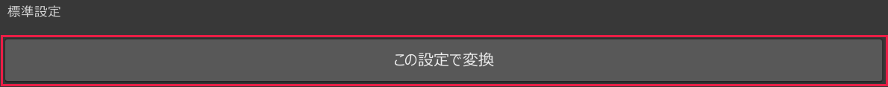
着せ終わると、コピーしたアバターの下に、衣装の行が増えます。名前から、元のアバターと選んだ衣装が分かります。同じ名前の別のものがあるときだけ、見分ける印が付きます。
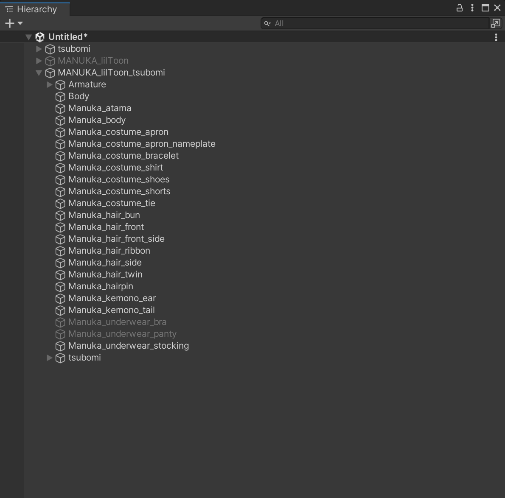
-
「結果」の欄に、「変換しました」と出たか確かめます。「結果」の欄は、ウィンドウの下の方にあります。これで、変換できています。
服の見分け方は、「Unity の基本の操作」にあります。
まとめて選ぶには、Ctrl キーを押したまま、行を 1 つずつ押します。灰色の行は、はじめから隠れています。ふちは見えず、選ばなくてかまいません。画像では、コピーしたアバターの中の、一番下の行ができた衣装です。
-
ヒエラルキーで、コピーしたアバターを開きます。そのすぐ下の、もとの服の行を選びます。できた衣装の行と、その中の行は、ふくめません。
-
インスペクターで、名前の左のチェックを外します。もとの服が見えなくなります。複数あるときは、名前の欄が「—」になり、右に数が出ます。数は、選んだ服によって変わります。
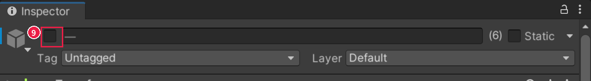
-
ヒエラルキーで、できた衣装の行をダブルクリックします。シーンビューが、衣装に寄ります。着せたいアバターが、元の服を着ていれば、できあがりです。
写真は、同じ組み合わせの例です。変換先のもとの服は、手順 8 と 9 で隠しています。
続きは、「練習の結果を見る・取り消す」にあります。
練習の結果を見る・取り消す
「はじめての練習」のあとに読む章です。自動チェックを見ると、戻し方です。
自動チェックを見る
自動チェックは、「結果」の欄に出ます。体に入り込むところが増えたか調べます。印のちがいで、次のように読みます。
- 白いふきだしで「ありません」と出た: 止まった姿では、増えたところはありません。そのまま進めます。
- 黄色い三角で「○ 頂点あります」と出た: シーンビューで、そこを見ます。肌が衣装の外に出ていなければ、そのままでかまいません。
- 肌が出て目立つとき: ［すき間の最小値 (mm)］を大きくして、もう一度［この設定で変換］を押します。
- 「8 つのポーズ」の平均: 腕と胴など、体どうしが重なるところでは、少し出ます。
肌が出ていなくても、数が出ることがあります。まずは目で見て確かめます。
値は、衣装や設定で変わります。元の服と比べられるときは、元から体に入っていた分も出ます。
場所の見方は、「貫通の場所を確かめたい」にあります。すき間の変え方は、「食い込みやぶかぶかを直したい」にあります。
元の衣装が見えなくなったとき
うまく着せられると、入れた元の服はひとりでに隠れます。データは消えません。Hierarchyの灰色の衣装を選ぶと、Inspectorにチェックが出ます。名前の左のチェックで、また見えるようになります。最後に着せた服を取り除いたときも戻ります。隠れたままでも、［衣装］に選んで着せ直せます。
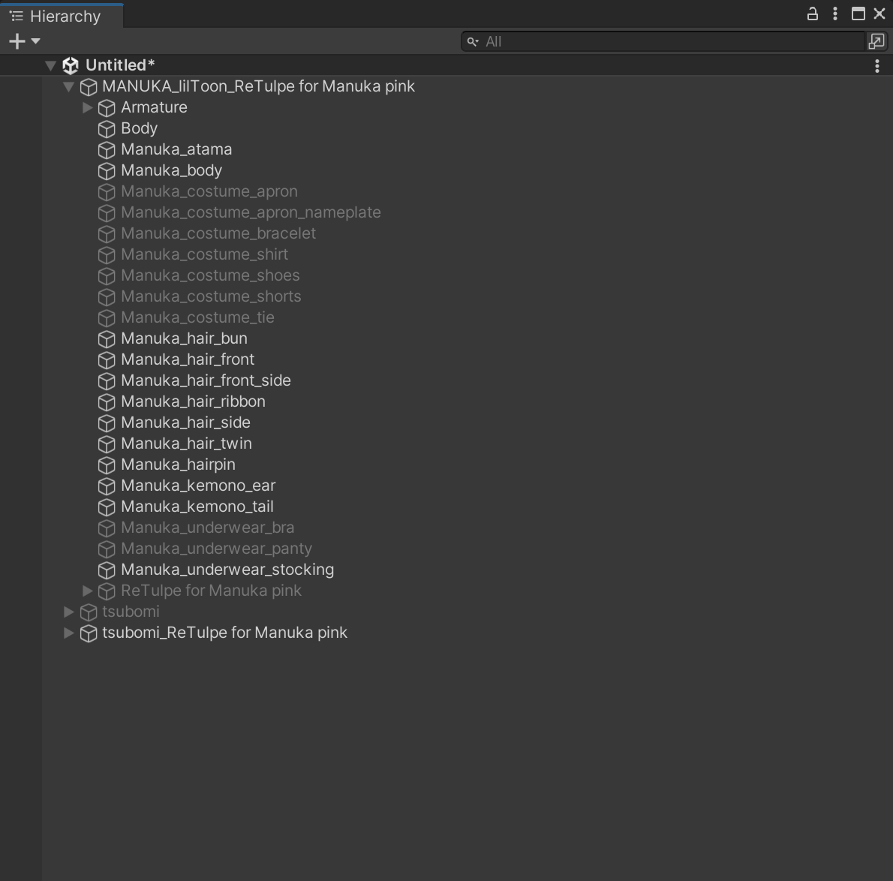
これは、着せたいアバターが、もともと着ていた服とは違います。そちらが重なるときは、練習の手順8・9で隠します。［複製したアバターに着せる］では、コピー前のアバターも隠れます。
取り消すとき
Ctrl+Z は、さいごの操作から 1 つずつ取り消します。着せたすぐあとなら、1 回で、まとめて取り消されます。そのあとで服を選んだり、隠したりしたときは、そちらから順に戻ります。服を隠していれば、その服が先に戻ります。1 回ずつ押して、衣装の行を見ます。できた衣装が消えたら、止めます。2 体は、そのままです。
Ctrl+Y を押すと、取り消したものが戻ります。ウィンドウの「結果」は、戻りません。
写真は、着せたすぐあとのHierarchyです。取り消すと、この衣装の行が消えます。
［この変換を取り除く］を使うときは、「取り消したい・変換し直したい」にあります。自分でチェックを外して隠した服は、これでは戻りません。名前の左のチェックを、自分で入れなおします。
うまくいかないとき
- ［この設定で変換］ボタンが灰色のまま。ウィンドウの案内を読みます。「→」のあとに、直し方が書いてあります。
- 「シーン上のアバター」と出た。変換先が、Project ウィンドウのファイルのままです。ヒエラルキーに置いたほうを、入れ直します。
- 「SkinnedMeshRenderer がありません」と出た。衣装に、SkinnedMeshRenderer（体や服の形を表示するパーツ）がありません。ほかのアバターを使います。
- Humanoid でないと出た。くわしいやり方は、「困ったとき」の章にあります。
気をつけること
服のPrefabを着せたいときは、「衣装の Prefab を着せたい」を見ます。
衣装の Prefab を着せたい
まだ着せていない衣装の Prefab を、アバターに着せたい
服のPrefabだけでも使えます。着せていない Prefab も、そのまま［衣装］の欄に入れられます。元アバターは、選びません。自動で調べます。見つからないときは、衣装から合わせます。このとき、［補助の骨を作る］は使われません。［ポーズを考えてウェイトを調整する］も同じです。骨の名前のつけ方が違っても、よくある名前なら、自動で合わせます。
先に、「はじめての練習」の手順 1・2・4 をやります。［衣装］の欄だけが、違います。練習の衣装が残っていたら、先に［この変換を取り除く］で取り除きます。
-
Project ウィンドウで、衣装の Prefab を探します。Prefab は、青い箱のアイコンです。
-
Prefab を、［衣装］の欄へドラッグします。［衣装］の案内が消えて、［この設定で変換］ボタンが使えます。
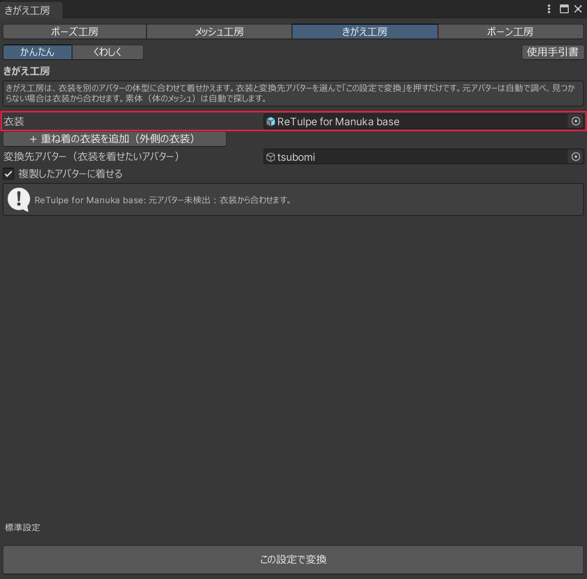
-
［この設定で変換］ボタンを押します。変換のあいだは、Unity が止まったように見えます。終わるまで、待ちます。
-
ヒエラルキーで、着せたいアバターの下を見ます。選んだ衣装の名前が分かる行が、できています。
Prefab がたくさんあって探しにくいときは、検索の欄が便利です。ドラッグできないときは、［衣装］の欄の右の丸いボタンで、Prefab を選べます。Prefab は、ヒエラルキーに置かなくてかまいません。できた衣装が見えないときは、着せたいアバターの左の ▶ を押すと、開きます。
元の Prefab のファイルも、アバターも、変わりません。できた衣装は、元の服のコピーです。中の並び方や、付いている設定は、残ります。変わるのは、形と、骨の位置と、ウェイトです。ウェイトは、衣装が、骨の動きにどれだけついていくかの割合です。補助の骨（スカートに脚が入りにくくなるように、足す骨）が増えることもあります。ほかの衣装も、同じやり方で着せられます。うまくいかなかったときは、すぐに Ctrl+Z を押します。取り消せます。
名前から、元のアバターと選んだ衣装が分かります。同じ名前の別のものがあるときだけ、見分ける印が付きます。
重ねて着せるときは、「重ね着の衣装を着せたい」の章を見ます。
気をつけること
- 骨で動かないものは、変換できません。
- Prefab の位置や向き、大きさを変えていると、ずれて読まれることがあります。大きくずれていると、「元アバターの体から大きく離れています」という警告が出ます。
- Prefab に部分ごとの設定を直接付けると、そのファイルが変わります。くわしいやり方は、「一部だけ、形を変えたくない」の章にあります。
うまくいかないとき
- 「名前で対応しませんでした」と出たら、骨を補います。くわしくの［衣装変換］を開きます。［自動判定の確認と修正］の中です。［骨の部位の補正（任意）］で直せます。
- ［この設定で変換］ボタンが灰色のまま。赤いエラーのあとの「→」に、直し方があります。
- 変換が、なかなか終わらない。重い衣装は、時間がかかります。終わるまで、待ってください。
重ね着の衣装を着せたい
上着の下にシャツ、のように、重ねて着せたい
欄を増やすと、衣装を重ねて着せられます。内側に着るものから、順に入れます。たとえば、内側がシャツで、外側が上着です。どちらも、同じアバター用の衣装を使います。元アバターは、衣装ごとに自動で調べます。外側のものは、内側のものに入り込まないように、合わせます。
先に、「はじめての練習」の手順 1・2・4 をやります。練習の衣装が残っていたら、先に［この変換を取り除く］で取り除きます。やることは、欄を増やして、ボタンを押すだけです。そのほかは、ふつうの変換と、同じです。
-
［＋ 重ね着の衣装を追加（外側の衣装）］ボタンを押します。［衣装］の欄が、2 つになります。「上の衣装から順に変換します」という案内が出ます。
-
［衣装 1（内側）］の欄に、内側に着るものをドラッグします。Prefab でも、元アバターが着ているものでも、かまいません。
-
［衣装 2（外側へ）］の欄に、外側に着るものをドラッグします。
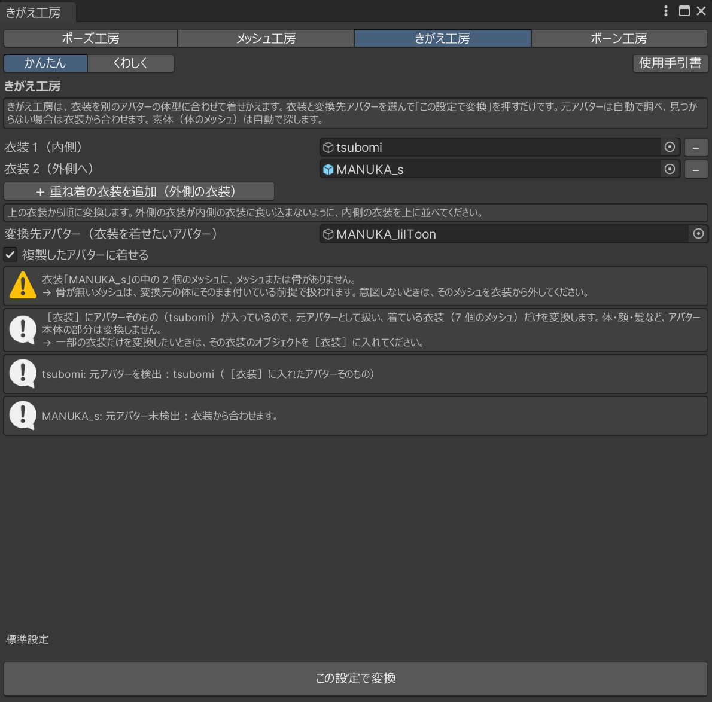
-
［この設定で変換］ボタンを押します。終わるまで、待ちます。
-
ヒエラルキーで、着せたいアバターの下を見ます。着せた数だけ、衣装が増えています。
白いふきだしに「元アバター未検出」と出ても、エラーではありません。そのまま変換できます。
ドラッグできないときは、欄の右の丸いボタンから、選べます。衣装が見えないときは、着せたいアバターの左の ▶ を押すと、開きます。
欄を消したいときは、欄の右の［−］ボタンを押します。順番を入れかえるボタンは、ありません。入れかえたいときは、欄に入れ直します。空の欄は、とばされます。同じものを 2 つの欄に入れると、2 つ目は、とばされます。
「結果」の欄には、変換直後に行った自動チェックの数値要約が、衣装ごとに出ます。くわしくの［貫通確認］で、衣装ごとに場所も確かめられます。数値の読み方は「貫通の場所を確かめたい」をご覧ください。
できあがったら、シーンビューで、重なりぐあいが見られます。うまくいかなかったときは、すぐなら Ctrl+Z で取り消せます。うまくいかないときは、「はじめての練習」の章を見ます。
気をつけること
- 内側に着るものは、上の欄に入れます。逆にすると、外側のものが、内側に入り込むことがあります。
- ウィンドウの設定は、すべてに、まとめて効きます。1 着だけ変えたいときは、部分ごとの設定（一部だけ変える設定）を使います。
- 1 着ずつ変換することもできます。ただ、そのときは、外側を内側に合わせるはたらきが、使われません。
- 重ね着のしくみは、動くことを確かめました。ただ、じっさいの衣装での見た目は、まだ確かめていません。3 着以上も、試していません。
- 時間は、着せる数だけ、かかります。
食い込みやぶかぶかを直したい
衣装が体に食い込む、またはぶかぶかに見える
食い込みは、体が衣装から出てしまうことです。ぶかぶかは、衣装が体からはなれて見えることです。直すには、設定を変えて、もう一度変換します。すき間（体と衣装の間のあき）を、大きくしたり、小さくしたりします。やることは、スライダーを動かして、ボタンを押すだけです。1 回で決めなくてもかまいません。なんどでも、変換し直せます。
先に、変換を 1 回やって、結果を見ておきます。やり方は、「はじめての練習」にあります。
-
「結果」の欄の自動チェックと、シーンビューを見ます。食い込みは、自動チェックの黄色い三角で分かります。ぶかぶかは、数には出ません。見た目で、決めます。
-
食い込むときは、［すき間の最小値 (mm)］のスライダーを、右へ動かします。体と衣装の間に、あけるすき間が、大きくなります。
-
ぶかぶかのときは、［元のすき間の倍率］のスライダーを、左へ動かします。1 のときは、元アバターと同じすき間です。元アバターが見つからないときは、骨のまわりの幅を基準にした、ゆとりが変わります。
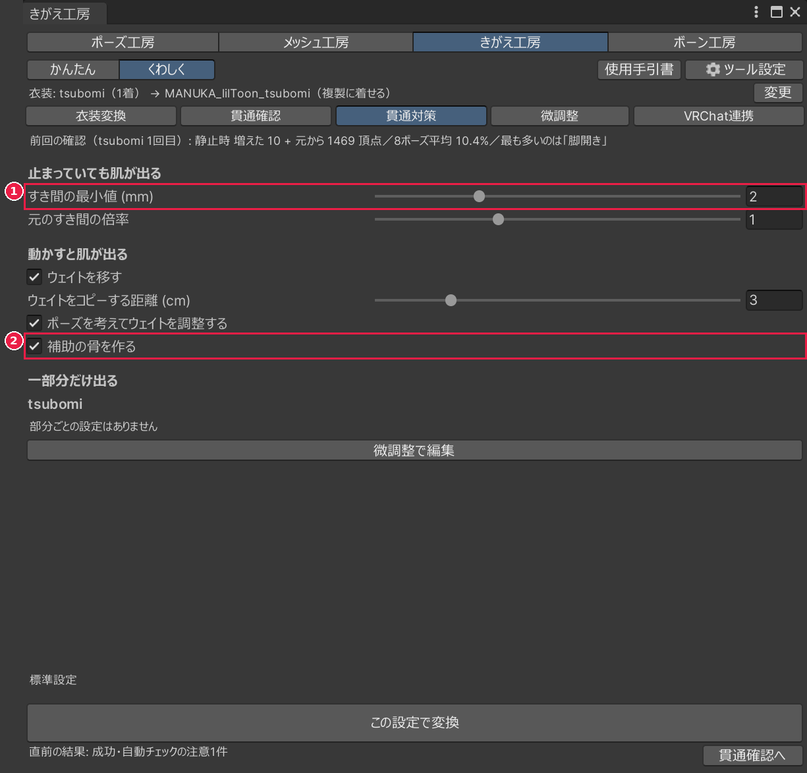
-
いまの自動チェックの数を、メモします。変換し直すと、前の数はなくなるためです。
-
もう一度、［この設定で変換］ボタンを押します。終わるまで、待ちます。
-
「結果」の欄の、衣装の行の右の文を見ます。前の結果と入れかわったという知らせが出ています。
-
「結果」の欄の新しい数と、メモした数を比べます。
手順 2 と 3 は、どちらか 1 つでかまいません。［すき間の最小値 (mm)］のめやすは、0 から数 mm です。まず、少しだけ動かして、ためします。動かしすぎると、衣装が体からはなれて見えます。ちょうどよいところは、衣装ごとにちがいます。ぴったりしすぎるときは、［元のすき間の倍率］を右へ動かします。スライダーは、数を打ちこんでも動かせます。
手順 6 の知らせは、「前回の結果を置き換えました」です。前の結果は、新しいものに置き換わります。うまくいかなかったときは、すぐなら Ctrl+Z で取り消せます。または、スライダーを元に戻して、もう一度変換します。
気をつけること
- 設定は、いっしょに変換する衣装すべてに、まとめて効きます。
- 貫通は、自動ではすべて消えません。試した例でも、そでぐちやくつに、少し残りました。
- 腕と胴のように、体どうしがかさなるポーズの貫通は、この設定では直りません。
- 元の服に、もともとある貫通も、直りません。自動チェックでは元から体に入っていた頂点数を別に示します。詳しくは「貫通の場所を確かめたい」をご覧ください。
- 変換し直すと、手で直したところも、消えます。残したいときは、くわしいやり方が、「取り消したい・変換し直したい」の章にあります。
- 一部だけのときは、部分ごとの設定で、そこのすき間を変えられます。くわしいやり方は、「一部だけ、形を変えたくない」の章にあります。
貫通の場所を確かめたい
色で見る
着せ終わると、自動チェックが出ます。どこが入ったかや、ポーズは、くわしくの［貫通確認］で見られます。
できた服の欄の［くわしく確認］を押します。くわしくの表示では［貫通確認へ］です。
［確認する衣装］から、見たい服を選びます。
［貫通を確認］を押します。Sceneに色が出ます。黄は浅いところ、赤は深いところです。
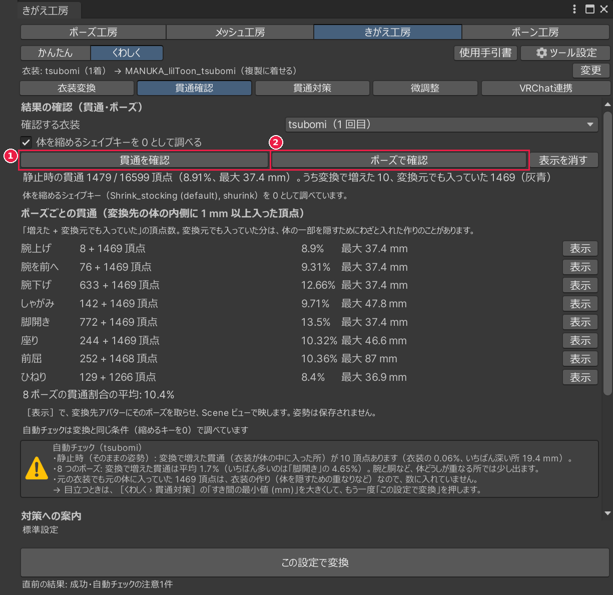
［体を縮めるシェイプキーを 0 として調べる］は、ふつうはオンです。2つのボタンで、同じ調べ方を使います。オフでは、縮めるキーを含む見た目の形で調べます。調べ方を変えたら、調べるボタンをもう一度押します。自動チェックは、服を合わせたときと同じです。
ポーズを見て、元に戻す
［ポーズで確認］を押します。8つのポーズの表が出ます。
見たい行の［表示］を押します。座った姿なら「座り」の行です。
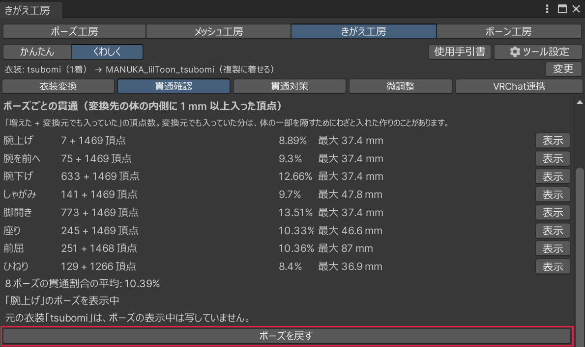
Sceneで、服の見た目を確かめます。
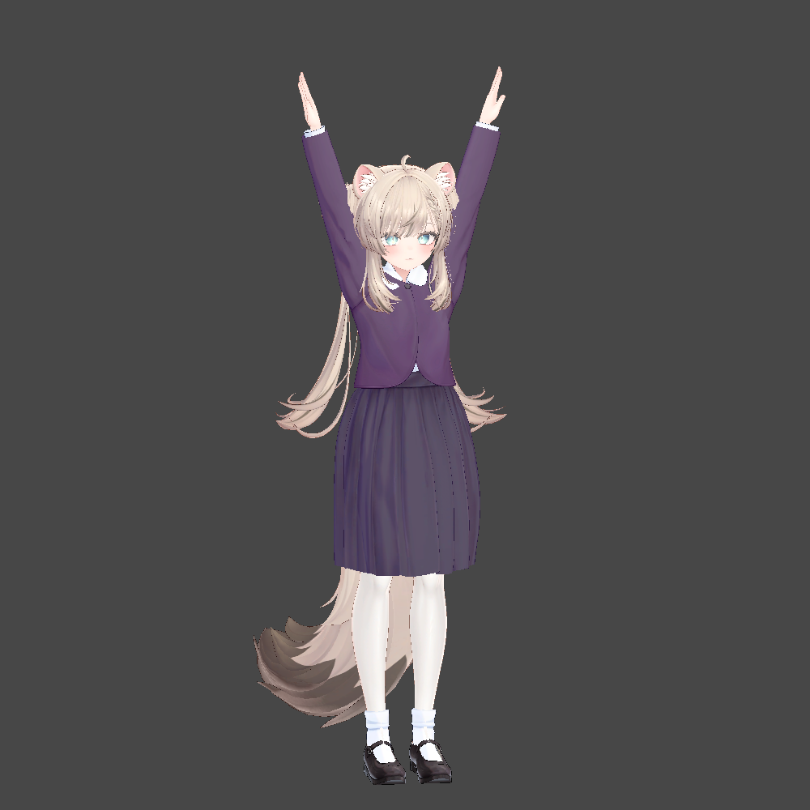
終わったら［ポーズを戻す］を押します。
［表示］では、いま見ているアバターが、そのポーズになります。見ている間だけのポーズです。保存されません。元の服を見せていたときも、この間は隠れます。ポーズを戻すと、元の服も見えるようになります。服がついてこないときは、お知らせも読みます。
［表示を消す］でも元に戻せます。色は、［貫通対策］へ移っても残ります。調べる服を変えるか、着せ直すか、窓を閉じると消えます。
どこを直すか
腕を上げると脇から肌が出るときは、［貫通対策へ］です。［動かすと肌が出る］で直します。膝の先だけなら、［微調整へ］です。すき間や動き方の直し方に、どれを使うかが書いてあります。
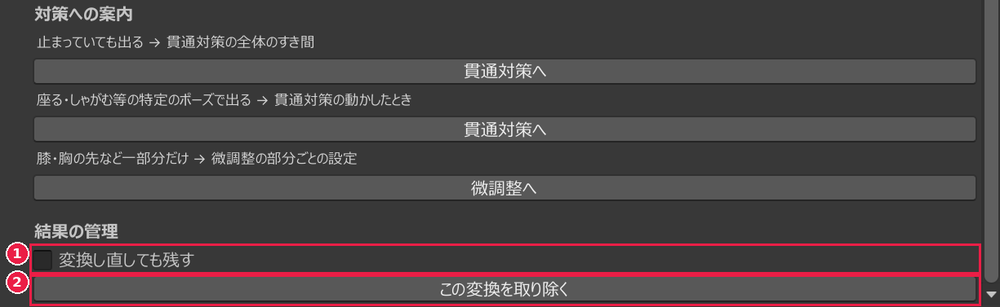
自動チェックの数を読む
止まっているとき
体の中に、1 mm以上入った頂点を数えます。新しく増えた数と割合、いちばん深いところが出ます。元の服と比べられるときは、もともと入っていた分も出ます。
8つのポーズを取るとき
自動チェックのまとめには、新しく入ったところの平均が出ます。いちばん多いポーズの名前と割合も出ます。［貫通確認］には、ポーズごとの表があります。
表の数は、新しく増えた分と、もともと入っていた分です。割合と平均には、もともと入っていた分も含みます。自動チェックのまとめとは、数え方が違います。比べられなかったときは、わけが出ます。
数だけで決めない
腕と胴のように、体どうしが重なるポーズもあります。そのときのめり込みは残ります。体と服がひとつながりなら、服の下をおしはかって測ります。ほんとうの体とは違うため、数が少なく出ることもあります。
調べるのは、決まった8ポーズです。ほかの動きや、VRChatの中での揺れは含みません。
開き直したあとも、調べ直せます。［貫通を確認］や［ポーズで確認］を使います。自動チェックのまとめとは分けて読みます。どこが入ったかを見るやり方に続きます。
体と服が一体のアバターに着せたい
肌と服が 1 つのパーツのアバターに、衣装を着せたい
体と服が一体のアバターは、肌と服が、ひとつながりになっています。そのため、服だけを外すことができません。それでも、衣装を着せることはできます。きがえ工房が、服の下の体を、おしはかって合わせます。そのままでは、元の服が残って、できた衣装と重なって見えます。そこで、元の服を、ボタンで隠します。隠すだけで、元のファイルは変わりません。
先に、「はじめての練習」の手順 1 から 5 をやります。［変換先アバター（衣装を着せたいアバター）］には、体と服が一体のアバターを入れます。ここまでは、ふつうのアバターと、同じです。
-
黄色い三角の印の警告が出るので、読みます。服の下の体を、おしはかるという知らせです。体と服がひとつながりだからです。警告が出ても、そのまま変換することができます。
-
［この設定で変換］ボタンを押します。終わるまで、待ちます。
-
「結果」の欄の［変換先の元の服を隠す（Undoで戻す）］ボタンを押します。元の服が、見えなくなります。
-
シーンビューで、衣装を見ます。脚や腕も、服といっしょに、消えて見えることがあります。
-
脚や腕も見るなら、肌を出せます。［元の服を隠して仮の肌を表示（試験的・Undoで戻す）］を押します。肌色の胴や腕や脚が、仮に出てきます。この手順は、飛ばしてもかまいません。
元の服を隠しても、自動チェックのまとめは変わりません。仮の肌（元の服を隠したところに出す、肌の色の面）は見た目を確かめるためのものです。数えるときは、仮の肌を使いません。服を合わせるときに、おしはかった体を使います。
隠した直後なら、Ctrl+Z で戻せます。あとからなら、［元の服を表示に戻す］ボタンで戻せます。このボタンは、隠したときだけ、「結果」の欄に出ます。Unity を開き直したあとでも使えます。
気をつけること
- 服の下の体は、おしはかった形です。本当の体と、違うことがあります。貫通の数も、その体で測ります。数だけでなく、目でも確かめることが大切です。
- 仮の肌は、まだ試しの機能です。顔や指、足先は、補いません。模様や質感も、もとには戻りません。
- 体と服が一体のアバターの服は、切り分けて、ほかのアバターへ移すことができません。
- マテリアル（色や質感を決める設定）の名前を見て、見分けています。当てはまらないときは、この警告も、隠すボタンも出ません。
- 服を含まない体が、別にあるときは、素体の欄に入れます。くわしくの［衣装変換］を開きます。［自動判定の確認と修正］の中を見ます。［体と服が一体のアバター］を、［推定しない］にします。
うまくいかないとき
- ［変換先の元の服を隠す（Undoで戻す）］ボタンが、灰色のまま。まだ変換していないためです。変換をすると、押せるようになります。
- 貫通を確かめたいときは、くわしいやり方が、「貫通の場所を確かめたい」の章にあります。
一部だけ、形を変えたくない
手首の飾りなど、一部だけ、元の形のまま残したい
衣装の一部だけ、変換のしかたを変えられます。これを、部分ごとの設定（一部だけ変える設定）と呼びます。手首の飾りのマテリアルを使います。その部分を、変換先の体型に合わせないようにします。骨の動きには、ついていきます。
先に、ウィンドウの 2 つの欄を埋めておきます。変換の前でも、後でもかまいません。設定は、次に［この設定で変換］を押したときから使われます。
飾りのマテリアルを調べます
-
シーンビューで、手首の飾りを押します。はじめは、アバターすべてが、オレンジ色のふちで囲まれます。飾りだけが囲まれたら、手順 2 はとばします。
-
もう一度、同じところを押します。飾りのパーツだけが、オレンジ色のふちで囲まれます。
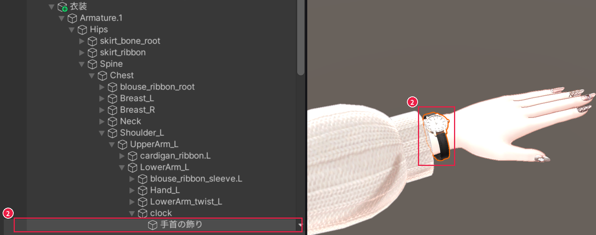
-
インスペクターの［Materials］を見ます。
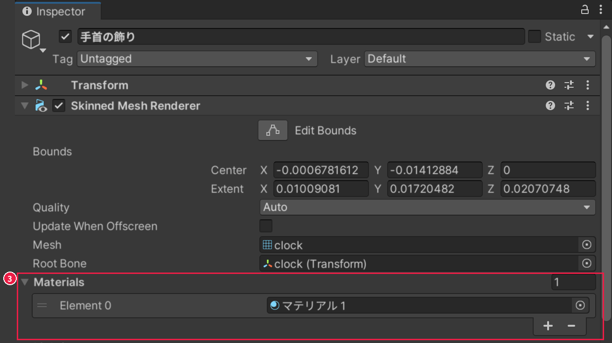
押すのは、できた衣装の飾りです。元の服の飾りでも、マテリアルの名前は同じです。
［Materials］は、Skinned Mesh Renderer の中にあります。閉じているときは、左の三角を押して開きます。並んだ名前が、そのパーツのマテリアルです。名前を覚えておきます。
ほかの服にも同じ名前があると、分けられません。そんなときは、「ブラシで塗って、場所を決めたい」の章へ進みます。
部分を決めます
ウィンドウでもInspectorでも、同じ欄を使えます。ここで場所を決めないと、設定が衣装のすべてに効きます。
Prefabへ追加するときは、確認の窓が出ます。［Prefab に追加する］は、ファイルを変える操作です。Ctrl+Zでは戻せません。変えたくなければ［キャンセル］です。シーンに置いた衣装なら、Ctrl+Zで戻せます。
くわしくの［微調整］で、ここから始めます。
-
［部分ごとの設定を追加］を押します。［部分設定の衣装］には、ここで使う服が出ています。
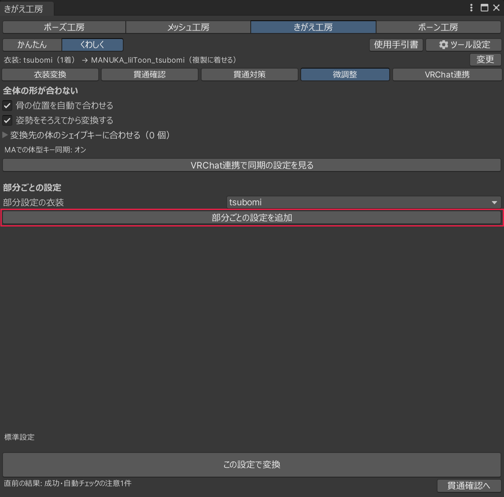
［マテリアルで指定］にチェックを入れます。
-
［衣装のマテリアルから追加...］を押します。マテリアルの名前の一覧が出ます。
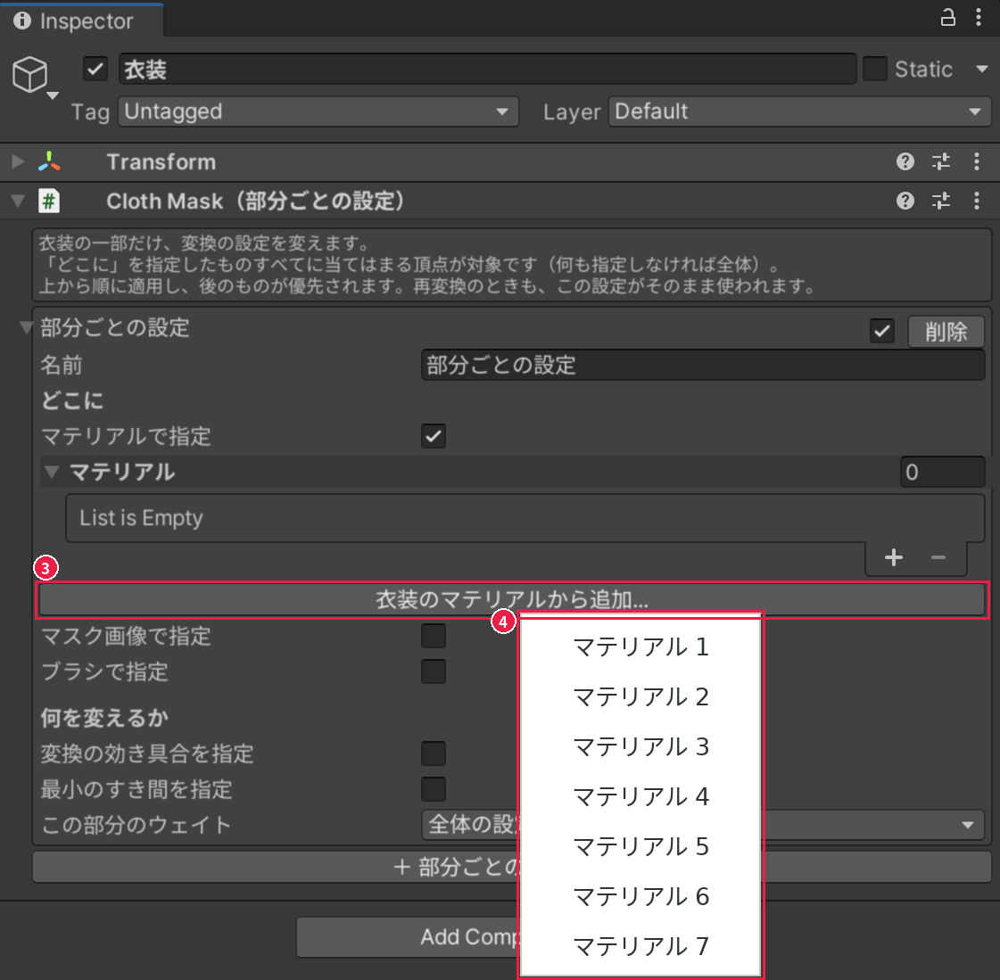
-
一覧から、調べた名前のマテリアルを選びます。［マテリアル］の欄に入ります。「Element 0」は、1 つ目という意味です。
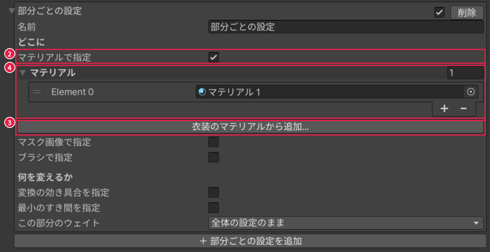
何を変えるかを決めます
-
［変換の効き具合を指定］にチェックを入れます。スライダーが出ます。
-
［効き具合］が 0 になっていることを確かめます。
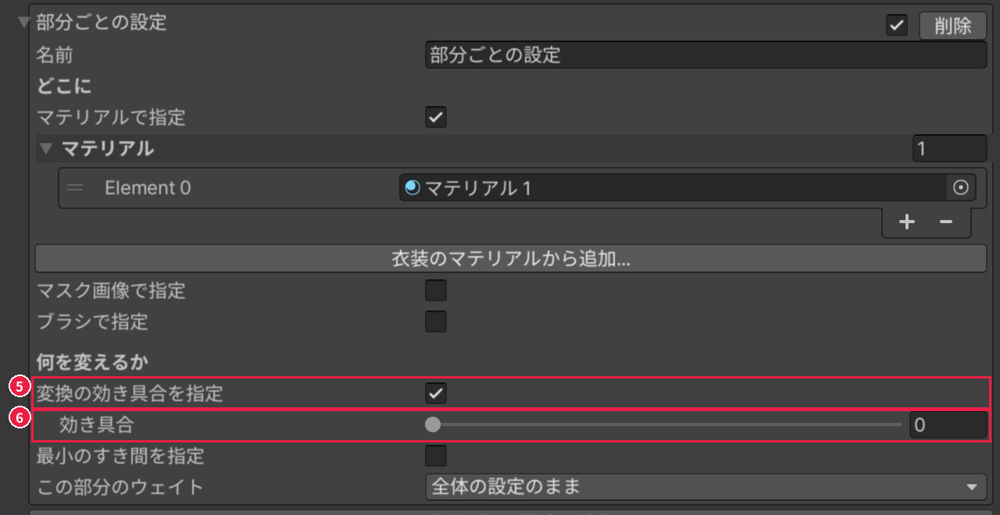
0 でないときは、スライダーを左の端まで動かします。0 の部分は、変換先の体型に合わせません。1 なら、ふつうに合わせます。
変換して確かめます
-
ウィンドウの［この設定で変換］を押します。
-
シーンビューで、手首の飾りを見ます。元アバターで着ていたときと同じ形なら、できています。
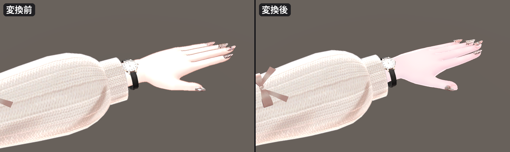
前に変換していれば、その結果と入れかわります。練習で隠した服は、隠れたままです。見くらべるには、かたほうのアバターを、名前の左のチェックで隠します。
ほかの設定は、「部分ごとの設定（Inspector）」の章にあります。
気をつけること
- この設定は、元の服に付きますが、形は変わりません。いらなければ、設定の右上の「⋮」から、「Remove Component」を選びます。シーンの衣装なら、Ctrl+Z でも取り消せます。
- Prefab に直接付けると、そのファイルが変わります。変えたくないときは、衣装をシーンに置いて付けます。
- 同じ名前のマテリアルが、ほかにもあれば、そこも選ばれます。
- 場所の決め方を 2 つ以上使うと、すべてに合うところだけが、選ばれます。
うまくいかないときは、「困ったとき」を見てください。
ブラシで塗って、場所を決めたい
専用のマテリアルが無い部分を、塗って決めたい
専用のマテリアルが無い部分は、ブラシで塗って決められます。ブラシ（なぞって塗るもの）は、シーンビュー（3D の景色を見るウィンドウ）で使います。マスク画像（白と黒で、選ぶところを示した絵）でも、決められます。
先に、「一部だけ、形を変えたくない」の「部分を決めます」で、設定を追加しておきます。衣装は、シーンに置いたものを使います。
ブラシで塗ります
-
［ブラシで指定］にチェックを入れます。
-
［塗るメッシュ］から、衣装のメッシュ（体や服の形そのもの）を選びます。
-
［ブラシで塗る］を押します。シーンビューの左上に、小窓が出ます。
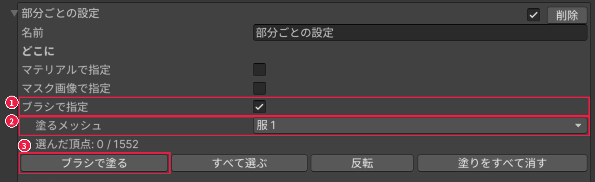
-
シーンビューで、衣装の上を左ドラッグします。なぞったところが、赤く光ります。
-
消すときは、Shift+左ドラッグです。
-
終わったら、［ブラシを終了］を押します。
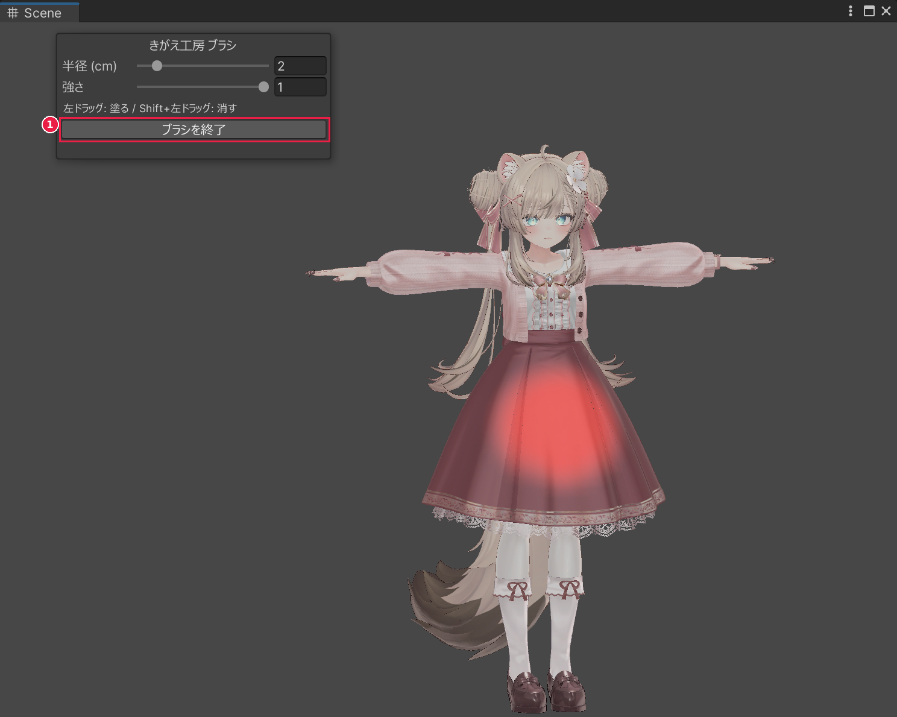
小窓の［半径 (cm)］で、ブラシの大きさを変えます。［強さ］で、塗りの濃さを変えます。塗った頂点（形を作る点）の数は、「選んだ頂点: N / M」に出ます。Ctrl+Z で、塗る前に戻せます。ここまでが、ブラシの使いかたです。
ほかの服やタブへ移ると、ブラシは終わります。塗った値は残ります。Alt を押しながらドラッグすると、塗らずに、見る向きを変えられます。
マスク画像で決めます
ブラシとは別のやり方です。どちらか 1 つで、場所を決められます。
-
［マスク画像で指定］にチェックを入れます。
-
［マスク画像］の欄に、画像を入れます。
-
［対象の色］で、［白い所］か［黒い所］を選びます。
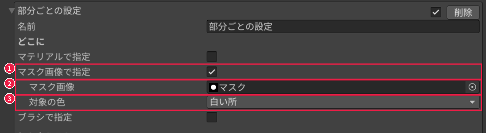
画像は、衣装の UV（絵を形にはるための地図）に合わせて作ります。png か jpg なら、そのまま使えます。画像を読めないときは、その部分はここで使うものになりません。これで、場所が決まります。
そのあとは、「一部だけ、形を変えたくない」の「何を変えるかを決めます」から続けます。
気をつけること
- 塗る・消す・Ctrl+Z の仕組みは、確かめています。
- マウスで塗るときの感触は、確かめていません。
- 塗ったあとで、頂点の数が違うメッシュに入れ替えることがあります。
- そのときは、「メッシュの頂点数が、塗ったときと違います」と出ます。
- このときは、塗り直します。
- 場所の決め方を 2 つ以上使うと、すべてに合うところだけがここで使うものです。
うまくいかないときは、「困ったとき」を見てください。
体のシェイプキーに、ついてこさせたい
胸の大きさなどを変えたとき、衣装もついてきてほしい
シェイプキー（形を変える設定）で、体の形を変えられます。たとえば、胸の大きさです。選んだキーと同じ名前のキーを、衣装にも作れます。体のキーを先に見ておきます。
合わせるキーを選びます
-
くわしくの［微調整］を開きます。
-
体のシェイプキーの折りたたみを開きます。「変換先の体のシェイプキーに合わせる」で始まる欄です。（ ）の中の数は、チェックしたキーの数です。
-
合わせたいキーに、チェックを入れます。キーの名前は、アバターごとに違います。
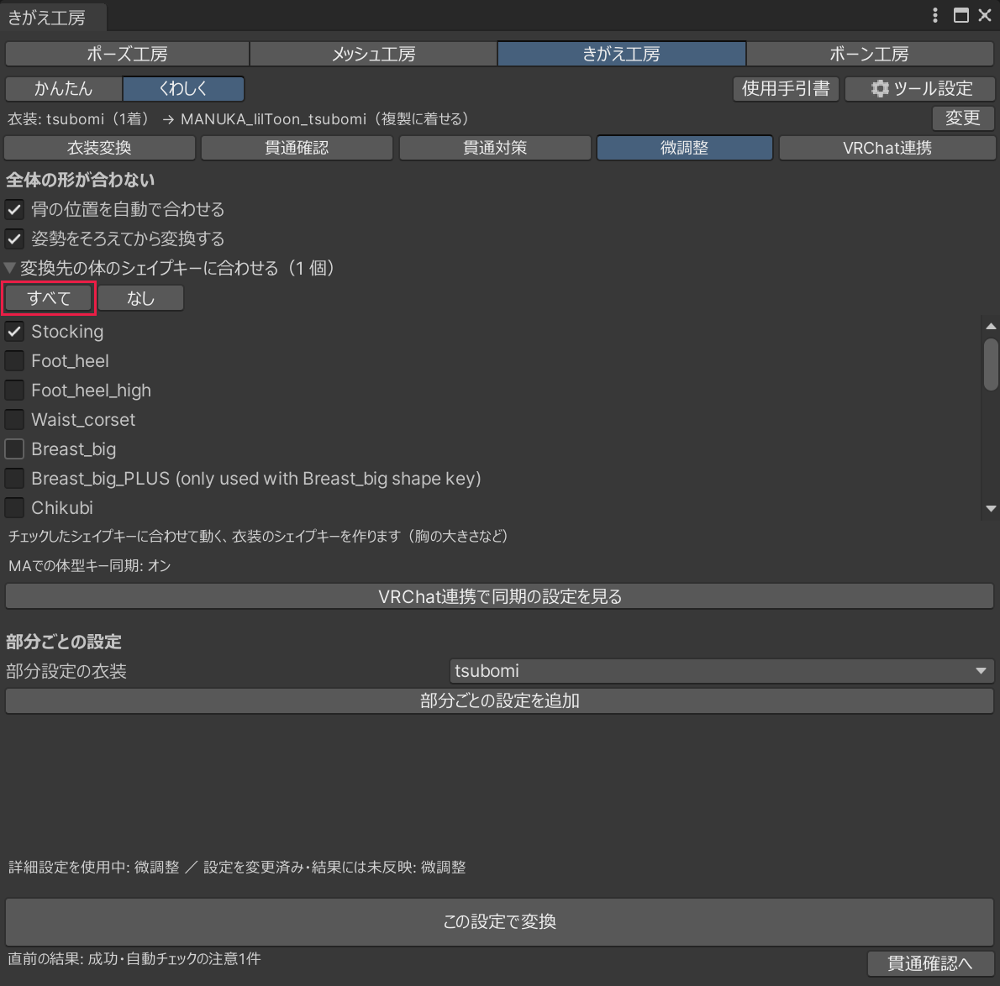
-
ウィンドウの［この設定で変換］を押します。終わるまで、待ちます。
［なし］を押すと、チェックがすべて外れます。［すべて］を押すと、すべてにチェックが入ります。チェックしなくても、衣装の近くの体を動かすキーは、自動で作られます。体を縮めるキーは、除きます。
結果を確かめます
-
ヒエラルキーで、着せ直した衣装の中のメッシュを選びます。メッシュは、体や服の形そのものです。
-
インスペクター（ものの設定が出るウィンドウ）で、［BlendShapes］を開きます。
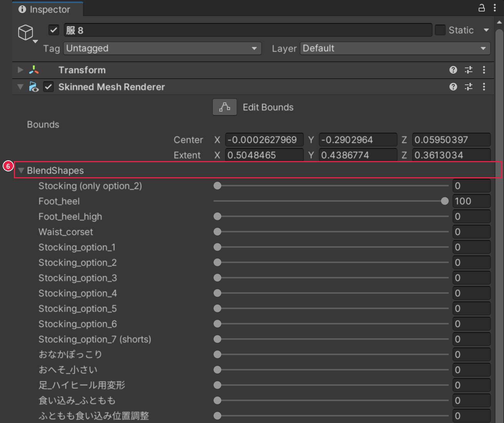
変換先の体と同じ名前のキーが、並びます。これで、キーが衣装にも作られました。
体のキーと、つなぎます
- Modular Avatar が入っていると、自動でつながります。
- ただし、1.18.7 以上の版が要ります。
- ［Modular Avatar で体型キーを同期する］が、オンのときです。
- ［Modular Avatar で結ぶ（Merge Armature）］でも、同じです。
- つながると、体のキーを動かしたとき、衣装のキーも動きます。
- 入っていないときや、古い版のときは、手でつなぎます。
- 体のキーを動かしたら、服のキーも同じ値にします。同じ名前のキーです。
- このときは、「変換の途中で気づいた点」に、案内が出ます。
- どちらでも、変換はできます。
気をつけること
- 体を縮めるキーは、0 として合わせます。
- 縮めるキーに、ついてくるわけではありません。
- 体と服が一体（1 つのパーツになっている）のアバターは、体のキーを正確には戻せません。
- 確かめた Modular Avatar は、1.18.7 です。
- Unity の画面で、連動して動くかは、確かめていません。
- どれくらい合うかは、衣装しだいです。シーンビュー（3D の景色を見るウィンドウ）で見ると分かります。
うまくいかないときは、「困ったとき」を見てください。
座ったときのスカートを直したい
座ったり、しゃがんだりすると、スカートに脚が入る
座ると、スカートに脚が入ることがあります。そのために、補助の骨（スカートに脚が入りにくくなるように、足す骨）を作れます。骨は、動きのもとになるところです。はじめから、オンになっています。
設定を確かめます
-
くわしくの［貫通対策］を開きます。
-
［ポーズを考えてウェイトを調整する］に、チェックが入っているか見ます。
-
［補助の骨を作る］も、同じように見ます。
-
ウィンドウの［この設定で変換］を押します。
ウェイトは、衣装が、骨の動きにどれだけついていくかの割合です。補助の骨を作ると、「変換の途中で気づいた点」に、次の文が出ます。補助の骨 N 本に Rotation Constraint を付けました（…）。
補助の骨には、Rotation Constraint（ほかの骨の回転につられて動くパーツ）が付きます。この文が出ないときは、補助の骨は作られていません。
座りの姿を見たいとき
自動チェックは8ポーズを調べます。平均や、最も多いポーズが出ます。くわしくの［貫通確認］で、［ポーズで確認］を使えます。「座り」の行の［表示］で、座った姿が見られます。終わったら［ポーズを戻す］です。場所とポーズの確認に、画像つきの手順があります。
気をつけること
- 補助の骨は、脚のまわりで、体から離れた布に作ります。
- 使わないほうが体に入りにくいときは、作りません。
- どれだけ減るかは、衣装しだいです。
- 下ろした手がスカートに入るのは、補助の骨では直りません。
- それには、コライダー（ぶつかるところを決めるパーツ）を使います。
- VRChat の中の話です。
- 「Modular Avatar や PhysBone と使いたい」の章を見ます。
- 腕と胴のように、体どうしが重なるところは、直せません。
- 確かめるポーズは、8 つだけです。ほかのポーズでの形は、確かめていません。
- オンとオフは、衣装のすべてに、まとめて効きます。
- 衣装ごとに変えたいときは、1 着ずつ変換します。
- VRChat の中での動きは、確かめていません。
うまくいかないときは、「困ったとき」を見てください。
Modular Avatar や PhysBone と使いたい
つなぎ方と、揺れものを決める
くわしくの［VRChat連携］で決めます。VRChat SDKやModular Avatarが無くても、タブは出ます。入っているかどうかは、上の案内で分かります。無くても、衣装の変換はできます。
くわしくの［VRChat連携］を開きます。
「アバターへの組み込み方」から、1つ選びます。
必要な揺れものの項目に、チェックを入れます。
［この設定で変換］を押します。
3つの組み込み方
はじめは、次の項目です。［衣装の骨を残して、変換先の骨の子にする（既定）］です。衣装の骨を残して、体について動くようにします。このときは、［Modular Avatar で体型キーを同期する］を選べます。
［Modular Avatar で結ぶ（Merge Armature）］は、衣装のArmature（骨をまとめたもの）を残して結びます。体と服のキーは、一緒に動きます。オフにはできません。Modular Avatarが無いと選べません。
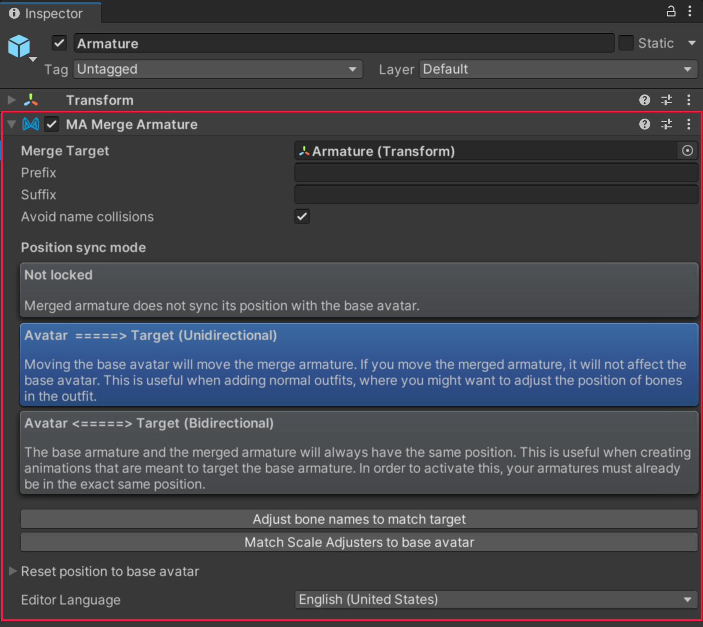
［変換先の骨に直接つなぐ］では、体と服のキーをそろえるしくみは、使いません。
スカートが揺れないとき
「揺れもの」の3つの項目を使います。衣装にあるPhysBoneを引き継ぐ項目は、はじめはオンです。手・腕・脚で布を押す項目もオンです。PhysBoneが無いスカートに付ける項目だけ、はじめはオフです。
着せたら、お知らせを読みます。「変換の途中で気づいた点」という欄です。数と内容は、衣装によって変わります。各欄の意味は、VRChat連携の画面説明にあります。
気をつけること
確かめたSDKは3.10.5です。Modular Avatarは1.18.7です。VRChatの中の揺れや、アップロードは確かめていません。布を押すところを足すと、パーツも増えます。パフォーマンスランクは保証しません。［VRChat SDK > Show Control Panel］で確かめます。
取り消したい・変換し直したい
元の服とアバターのデータは、そのまま残ります。すぐに戻すやり方と、あとで外すやり方があります。
すぐに取り消す
着せたすぐあとなら、Ctrl+Zでまとめて戻せます。あとで服を隠したときは、そちらから順に戻ります。Ctrl+Yでやり直せます。
あとから取り除く
くわしくの［貫通確認］で、［確認する衣装］を選びます。
「結果の管理」の［この変換を取り除く］を押します。
服と、アバターに足した骨などをまとめて外します。できた服の欄や、服のInspectorにも同じボタンがあります。いちばんあとに着せた服なら、自動で隠れた元の服も戻ります。自分でチェックを外した服は、チェックを入れ直します。
ウィンドウを閉じたあと、続きから始める
同じシーンで、ウィンドウを開き直します。［Tools > Kigae Koubo > Open］です。いちばんあとに入れた服や値が戻ります。まだ着せていない値も、Unityを閉じるまでは残ります。
ほかの服を直すときは、Hierarchyでその服を選びます。シーンを開き直したときも同じです。服のInspectorで［この衣装の調整を再開］を押します。工房にある同じ名前のボタンも使えます。服や値を確かめます。直したい値を変えてから、［この設定で変換］を押します。続きから始めるだけでは、服は変わりません。
着せた服には、使った値を残します。シーンを保存しておけば、開き直しても使えます。まとめて着せた服なら、入れた並びも戻ります。
古い版で着せた服には、値が残っていないことがあります。そのときは、はじめの値を使うと出ます。元の服などを消していたら、空の欄へ入れ直します。
前の服を残して、着せ直す
［貫通確認］の［確認する衣装］で、残したい服を選びます。
［変換し直しても残す］にチェックを入れます。
変えたい値を変えます。すき間なら［貫通対策］です。
［この設定で変換］を押します。
残すチェックが無いと、前の服は置き換わります。手で直したところも消えます。チェックがあると、新しい服が別にできます。重なるので、比べるときは片方を隠します。服のInspectorでも、同じチェックを使えます。
シーンを保存すると、服もその値も残ります。開き直したあとの数は、［貫通確認］で調べ直します。ファイルの片付けは別のやり方です。
変換で作ったファイルを片付けたい
使わなくなったファイルを、消したい
変換すると、メッシュ（体や服の形そのもの）などのファイルができます。ファイルは、［保存先フォルダ］に入ります。はじめの保存先は、Assets/GP12_KigaeKoubo_Converted です。きがえ工房の本体フォルダの外にあるので、入れ直しても消えません。
使われなくなったファイルは、自動で片付きます。今すぐ片付けることもできます。
自動の片付け
くわしくの［⚙ツール設定］に、「変換で作ったファイルの片付け」があります。その下の［使われなくなった、変換で作ったファイルを自動で片付ける］が、自動の片付けです。
はじめから、チェックが入っています。変換のたびと、Unity を起動したときに、片付けます。起動のときに調べるのは、はじめの保存先だけです。どのシーンからも使われていないファイルだけを、消します。今回の起動で作ったファイルは、次の起動まで残します。Ctrl+Z で戻ることがあるからです。
今すぐ片付けます
自動の片付けとは別のやり方です。この手順で消したファイルは、Ctrl+Z でも戻りません。
-
［いま片付ける...］を押します。
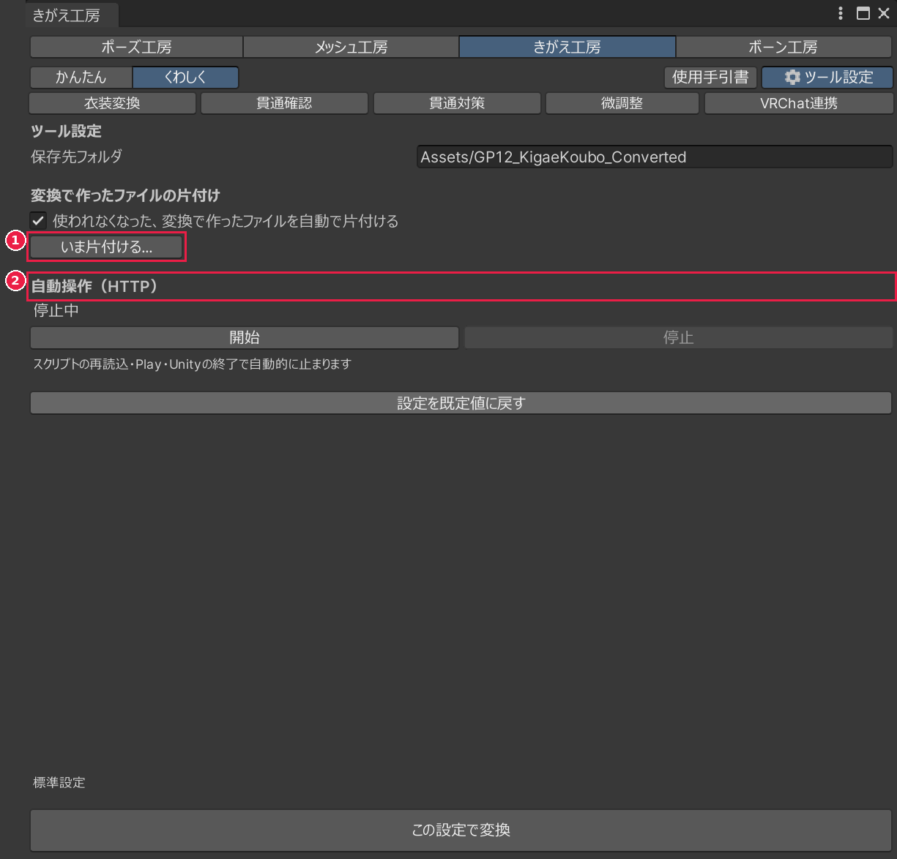
-
確認の窓の文を読みます。
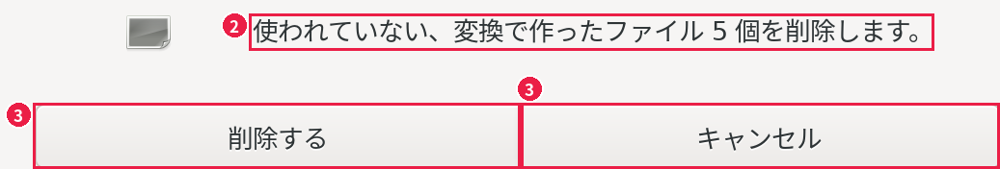
-
［削除する］か、［キャンセル］を押します。
窓に、消すファイルの数が出ます。消すものが無いときは、「片付ける、変換で作ったファイルはありません」と出ます。そのときは、［OK］を押します。
今回の起動で作った、使われていないファイルがあると、ボタンが 3 つになります。3 つ目は、［Undo の履歴も消して片付ける］です。それも、消せます。ただし、Undo の履歴が、すべて消えます。
気をつけること
- 消したファイルは、戻りません。
- ［Undo の履歴も消して片付ける］を押すと、Ctrl+Z で戻せる操作も無くなります。
- ヒエラルキーで衣装を消しても、ファイルは残ります。
- シーンを保存すると、次の起動のあとの片付けで消えます。
- ［設定を既定値に戻す］を押しても、［保存先フォルダ］は戻りません。
うまくいかないときは、「困ったとき」を見てください。
変換した服を、さらに別のアバターへ移す
一度着せた服も、次のアバターへ移せます。たとえば、AからBへ着せた服を、BからCへ移すやり方です。
［衣装］に、できた服を入れます。中のパーツだけではありません。服をまとめている、一番上の行を使います。
［変換先アバター（衣装を着せたいアバター）］に、次のアバターを入れます。
［この設定で変換］を押します。
前のアバターの骨は、次へは持っていきません。ただし、前のアバターには、服の骨が残ることがあります。そんなときは、「結果」の欄に、取りのぞき方が出ます。
前のアバターでその服を使わなければ、前の服の記録を使います。Hierarchyで前の服を選びます。Inspectorの［この変換を取り除く］で取り除けます。次に着せた服と取り違えないようにします。
一度合わせた形を、さらに合わせるやり方です。AからCへそのまま着せた形とは、少し違うことがあります。見た目をもう一度確かめます。
画面の説明（上と下のボタン）
上と下のボタンは、スクロールしても残ります。タブを変えても、入れた服や値はそのままです。切り替えるだけでは、着せ直しません。
上部のボタン
- 工房のボタン: ほかの工房へ移ります。まだ入れていない工房は開けません。
- ①［かんたん］［くわしく］: 見せる欄を切り替えます。
- ②［使用手引書］: この手引書をブラウザで開きます。
- ②［⚙ツール設定］: くわしくでだけ出ます。同じウィンドウで開いたり閉じたりできます。
- 5つのタブ: ［衣装変換］［貫通確認］［貫通対策］［微調整］［VRChat連携］です。
- ［変更］: 入れる欄へ戻ります。ほかのタブで、服の名前のそばに出ます。長い名前は、マウスを重ねると読めます。
下のボタンとお知らせ
［標準設定］なら、はじめの値です。［詳細設定を使用中］なら、変えてあるタブ名が出ます。かんたんに戻しても、その値を使います。
［設定を変更済み・結果には未反映］は、まだ着せ直していない印です。［設定を見る］で、変えた欄へ戻れます。③［この設定で変換］で、服を着せ直します。
ほかのタブでは、下に［直前の結果］も出ます。うまくいったか、気をつけることがあるか分かります。［貫通確認へ］で調べられます。
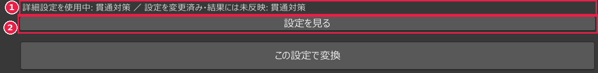
画面の説明（［かんたん］）
はじめて開くと、こう見えます。服とアバターを入れて、下のボタンで着せます。重ね着もできます。
入力
- ［衣装］: 着せたい服です。Prefabも、シーンに置いた服も使えます。
- ［＋ 重ね着の衣装を追加（外側の衣装）］: もう1着を入れる欄が出ます。上から内側、下へ外側です。［−］で欄を消します。
- ［変換先アバター（衣装を着せたいアバター）］: シーンに置いたアバターを入れます。
- ［複製したアバターに着せる］: コピーして着せます。コピー前のアバターは隠れます。オフなら、入れたアバターへ着せます。
- ［この衣装の調整を再開］: できた服を選ぶと出ます。前に使った服や値が戻ります。
着せる前のお知らせ
体や骨がうまく合わないと、［くわしくの衣装変換で直す］が出ます。このボタンで、直すところへ行けます。
白いふきだしは、お知らせです。空の欄も知らせます。黄色は、気をつけることです。赤いエラーが出ると、下のボタンを押せません。「→」のあとに、直し方が出ます。
できたあとの欄
うまく着せられたかと、自動チェックが出ます。はじめてなら「新規」と出ます。着せ直したときは、前の服と入れかわったことも知らせます。
［Sceneで見る］で、できた服へカメラが寄ります。重ね着なら、まとめて映します。［くわしく確認］で、［貫通確認］へ進みます。［この変換を取り除く］で、服と足した骨などを取り除けます。
着せ終わると、元の服は見えなくなります。戻し方は、練習の続きにあります。
画面の説明（［衣装変換］）
服を入れる欄は、かんたんと同じです。できたあとの［くわしく確認］は、ここでは［貫通確認へ］です。
［自動判定の確認と修正］
ふだんは閉じています。体や骨のお知らせがあると、開いて出ます。骨がうまく合わないと出たら、ここで直します。
- ［素体（体のメッシュ）］: 見つけた体と、その理由が出ます。［＋ 素体を追加］で、体を手で入れられます。空なら、自動で探します。［−］で欄を減らせます。
- ［体と服が一体のアバター］: はじめは［自動（服の下を推定）］です。服のない体を別に入れるときは、［推定しない］にします。
- ［骨の部位の補正（任意）］: 名前で分からない骨を補えます。［骨の対応を追加］で行を足します。［衣装の骨］と［体の部位］を入れます。［−］で消せます。
- 元アバターが見つかった服では、骨を手で補いません。その理由も出ます。
体と服がひとつながりのとき
［変換先の元の服を隠す（Undoで戻す）］で、もとの服を隠せます。［元の服を隠して仮の肌を表示（試験的・Undoで戻す）］では、肌も出せます。隠したあとは、［元の服を表示に戻す］で戻せます。
入力に使った服を隠すしくみとは、別です。体と服がひとつながりのときのやり方を先に読みます。
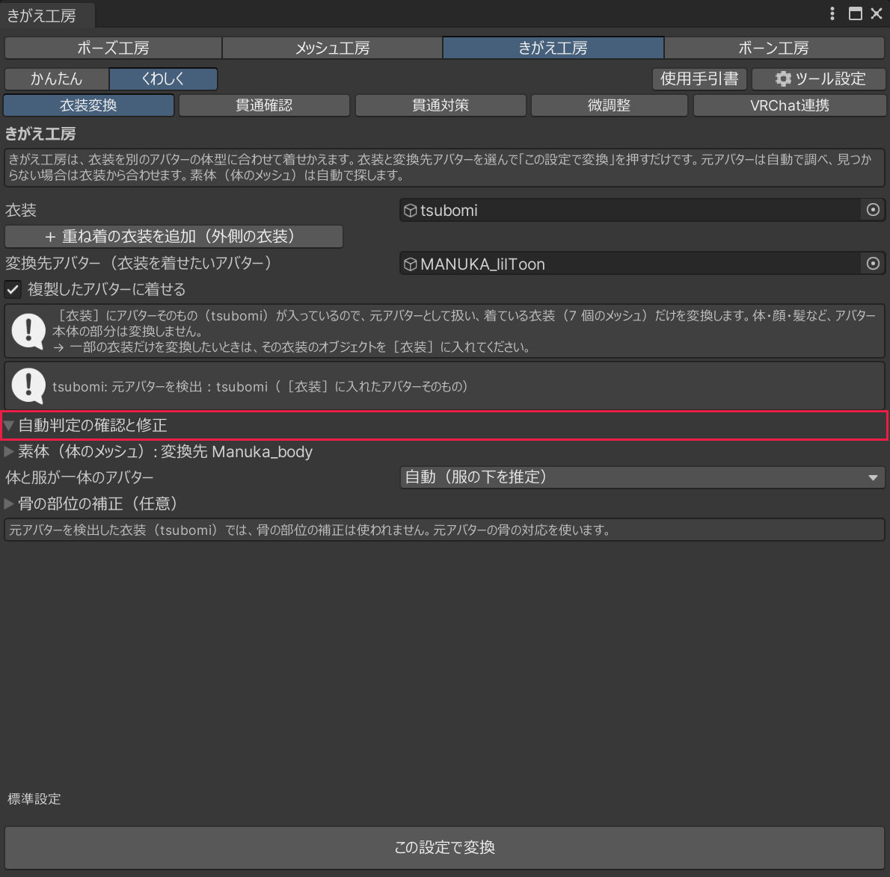
画面の説明（［貫通確認］）
できた服を調べるタブです。服の形を直すタブではありません。ポーズを見ている間だけ、アバターの姿が変わります。
調べるボタン
- ［確認する衣装］: 調べたい服を選びます。何回目に作った服かも分かります。
- ［体を縮めるシェイプキーを 0 として調べる］: 下の2つのボタンに使います。ふつうはオンです。オフなら、縮めたままの体で調べます。
- ［貫通を確認］: 止まった姿を調べます。Sceneでは、入っているところに色が出ます。
- ［ポーズで確認］: 8つのポーズを調べます。数や割合、深さが表で出ます。
- ［表示］: その行のポーズを取らせます。［ポーズを戻す］で元に戻せます。ポーズは保存されません。
- ［表示を消す］: 色やポーズを見せるのをやめます。
- 自動チェックのまとめ: 着せたすぐあとに調べたものです。今、手で調べた数とは違うことがあります。
案内と結果の管理
［貫通対策へ］では、すき間や動き方を直せます。一部だけなら［微調整へ］へ進みます。
［変換し直しても残す］なら、前の服と見くらべられます。［この変換を取り除く］で、服と足した骨などを取り除けます。Inspectorの記録にも、同じボタンがあります。
服が無ければ、［衣装変換へ］で戻れます。場所とポーズを見るやり方も読みます。
画面の説明（［貫通対策］）
肌が出るところを減らすタブです。値を変えたら、［この設定で変換］で着せ直します。そのあと、［貫通確認］で見直します。
前に調べた数
調べたことがあれば、上にまとめが出ます。止まった姿と、8ポーズの数が分かります。新しい値で着せたときの数ではありません。
止まっていても肌が出る
- ［すき間の最小値 (mm)］: 体からどれだけ離すかです。食い込むときは、大きくします。
- ［元のすき間の倍率］: 1なら元の幅です。ぶかぶかなら小さくします。元アバターが無ければ、骨の周りの幅から決めます。
動かすと肌が出る
- ［ウェイトを移す］: 体と同じように服を動かします。
- ［ウェイトをコピーする距離 (cm)］: 体に近いところほど、そのまま写します。どこまでを近いとするかの値です。
- ［ポーズを考えてウェイトを調整する］: 動かしたときに、体へ入りにくくします。
- ［補助の骨を作る］: 座ったときに、スカートへ脚が入りにくくします。良くならないときは、作りません。
元アバターが無いときは、下の3つは使いません。ウェイトを移さないときも、コピーする距離は使いません。使わない理由が出ても、値は残ります。
一部だけ肌が出る
部分ごとのすき間も、一覧で見られます。名前と幅、使うかどうかが出ます。ここでは変えられません。膝の先だけなら、［微調整で編集］へ進みます。
画面の説明（［微調整］）
服の形を整えるタブです。変えた値は、次に着せ直すときから使います。
全体の形と体型キー
- ［骨の位置を自動で合わせる］: 骨の位置や長さを合わせます。ふつうはオンです。
- ［姿勢をそろえてから変換する］: 腕や脚の向きをそろえます。ふつうはオンです。終わると元の姿に戻ります。
- 元アバターが見つからないときは、この2つを使いません。理由も出ます。
- 体のシェイプキーの折りたたみ: 合わせたいキーを選べます。数は、チェックしたキーの数です。［すべて］でまとめて入れられます。［なし］で外せます。
- ［VRChat連携で同期の設定を見る］: 体と服のキーを、一緒に動かす欄へ進みます。今、使うかどうかも出ます。
部分ごとの設定
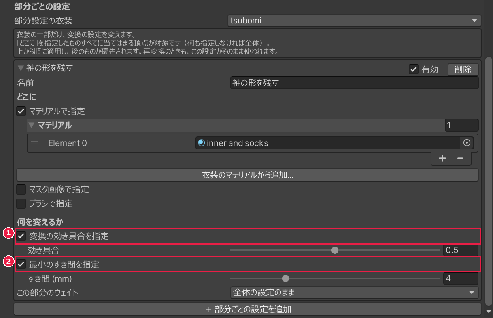
［部分設定の衣装］で、服を選びます。まだ無ければ、［部分ごとの設定を追加］で足せます。いくつもあれば、［編集する設定の場所］で選べます。親に付けたものは、その下の服にも使います。
ここに出る欄は、Inspectorと同じです。マテリアルやブラシなどで、変えたいところを決めます。すき間や動き方を、そこだけ変えられます。各欄の説明に続きます。
Prefabへ足すと、ファイルが変わります。［Prefab に追加する］で進めます。Ctrl+Zでは戻せません。やめるなら［キャンセル］です。ブラシは、服やタブを変えると終わります。塗ったものは残ります。
画面の説明（［VRChat連携］）
骨のつなぎ方と、揺れものを決めます。上の案内で、SDKとModular Avatarがあるか分かります。
アバターへの組み込み方
- ［衣装の骨を残して、変換先の骨の子にする（既定）］: 服の骨を残します。体型キーをそろえるかは選べます。
- ［Modular Avatar で結ぶ（Merge Armature）］: 服の骨をまとめたまま結びます。体型キーはそろえます。
- ［変換先の骨に直接つなぐ］: 体の骨を使います。体型キーをそろえるしくみは使いません。
- ［Modular Avatar で体型キーを同期する］: 体と服のキーを一緒に動かします。MAが無いと使えません。MAで結ぶ方法も同じです。
揺れもの
- ［PhysBone を引き継ぐ（VRChat）］: 服の揺れものを付け直します。はじめはオンです。
- ［スカートに手・腕・脚の当たり判定（VRChat）］: 布を押すところを足します。はじめはオンです。
- ［スカートの骨に PhysBone を付ける（VRChat）］: まだ揺れないスカートに付けます。はじめはオフです。使うときだけオンにします。
この3つは、SDKがあるときだけ出ます。VRChatの中でどう揺れるかは、まだ確かめていません。
書き出すとき
［出力ウェイトを4本に制限（互換用）］は、できた服だけを4本に絞ります。元のメッシュは変えません。オフなら5本目からも残します。動かした形が変わることがあります。
補助の骨は、VRChatへ載せるとき、自動でConstraintに変わります。作りたいときは、［貫通対策］を使います。
画面の説明（［⚙ツール設定］）
くわしくの右上で、開いたり閉じたりできます。前に見ていたタブや、選んだ服はそのままです。
どこへ入れるか・片付け
［保存先フォルダ］は、できたファイルを入れる場所です。はじめは Assets/GP12_KigaeKoubo_Converted です。
［使われなくなった、変換で作ったファイルを自動で片付ける］なら、自動で消せます。今すぐなら［いま片付ける...］です。消す数を見て、［削除する］で進めます。やめるなら［キャンセル］です。
［Undo の履歴も消して片付ける］では、Ctrl+Zで戻れる操作も無くなります。消したファイルは戻りません。先に片付けのやり方を読みます。
古いメッシュ工房の設定があるとき
古い記録があるときだけ出るボタンです。［変換前のメッシュ工房設定を整理］で、残っている古い設定を片付けます。出ている注意を読んでから使います。
自動操作（HTTP）
プログラムから使う人のための欄です。止まっているか動いているかが分かります。［開始］で動かし、［停止］で止めます。動いているときは、つなぐ先のURLも出ます。つなぐための秘密の値は出ません。
スクリプトを読み直すと、止まります。Playに入るときや、Unityを閉じるときも同じです。ふつうにウィンドウを使うなら、止めたままでかまいません。
はじめの値へ戻す
［設定を既定値に戻す］で、着せ方をはじめの値へ戻せます。［保存先フォルダ］は、そのままです。
部分ごとの設定（Inspector）
同じ欄を、［微調整］でもInspectorでも使えます。やり方は「一部だけ、形を変えたくない」をご覧ください。
Hierarchyで服や、その親を選びます。
Inspectorの［Add Component］で足します。名前は「きがえ工房 > Cloth Mask」です。
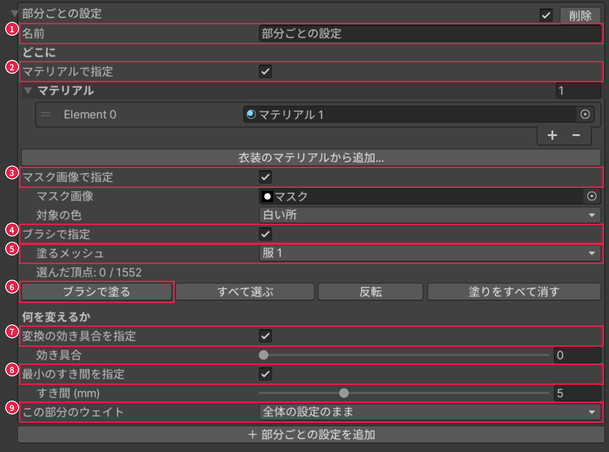
Inspector の設定
- ①［名前］: 見分けるための名前です。［削除］で消します。
- ［有効］のチェックを外すと、そこに書いた値は使いません。
- ［＋ 部分ごとの設定を追加］: 設定をもう1つ足します。上から順に使います。同じところなら、あとの値で決まります。
- 「どこに」: どの部分かを決めます。
- ②［マテリアルで指定］: マテリアルを使う部分です。［衣装のマテリアルから追加...］で一覧から入れます。
- ③［マスク画像で指定］: 白く塗ったところか、黒く塗ったところです。［対象の色］で選びます。
- ④［ブラシで指定］: 塗った部分です。
- 「何を変えるか」: どう変えるかを決めます。
- ⑦［変換の効き具合を指定］: ［効き具合］が 0 なら、そこは変換先の体型に合わせません。骨の動きにはついていきます。
- ⑧［最小のすき間を指定］: ［すき間 (mm)］で、体とのすき間を決めます。
- ⑨［この部分のウェイト］: ［全体の設定のまま］［移す］［移さない］から選びます。
- ここで決めたところは、そのとおりに動きます。ほかのところは、［ウェイトを移す］に従います。
- ［マテリアル］は並んだマテリアルを変えられます。［マスク画像］と［対象の色］は絵で、変えるところを決めます。［白い所］か［黒い所］を選べます。
- ［塗るメッシュ］で、塗るものを選びます。［ブラシで塗る］で始めます。［塗りをすべて消す］で、塗ったものを消します。
- ［すべて選ぶ］で、塗るメッシュをまるごと選べます。［反転］で、塗ったところと塗っていないところを入れかえます。
- Sceneの［半径 (cm)］は太さ、［強さ］は濃さです。［ブラシを終了］で終えます。
困ったとき
まず、ウィンドウの赤や黄色の案内を読みます。「→」のあとに、直し方があります。
［この設定で変換］が灰色で押せない
- どうなっている: 空の欄があるか、赤いエラーが出ています。
- どうすれば: 案内を読んで、欄を入れるか直します。
「シーン上のアバター」と出る
- どうなっている: 着せたいアバターを、ファイルのまま入れています。衣装は、ファイルのままでかまいません。
- どうすれば: 着せたいアバターをヒエラルキーに置きます。置いたほうを入れ直します。
「Humanoid ではありません」と出る
- どうなっている: 人型の骨の設定がありません。
- どうすれば: モデルの［Rig］タブを開きます。［Animation Type］を Humanoid にします。［Apply］を押します。
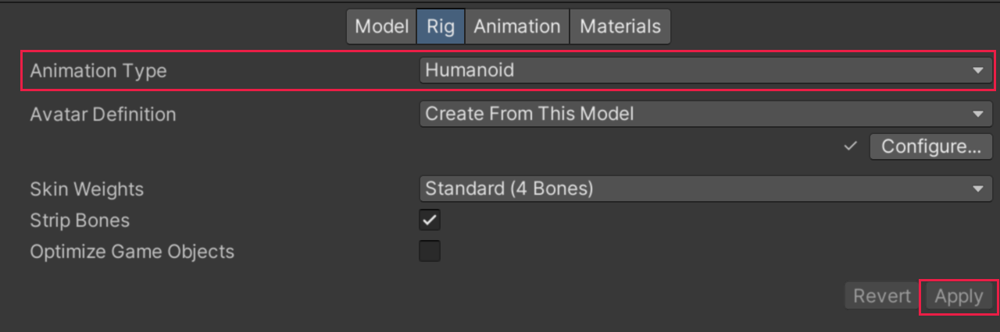
「素体（体のメッシュ）が見つかりません」と出る
- どうなっている: 体のメッシュが分かりません。
- どうすれば: 「素体（体のメッシュ）」を開きます。［＋ 素体を追加］を押します。出た欄に、体のメッシュを入れます。
「衣装「…」が変換先アバターの中にあります」と出る
- どうなっている: 着せたいアバターそのものを、［衣装］に入れています。
- どうすれば: 衣装のオブジェクトか、衣装の Prefab を、［衣装］に入れます。元アバターに着せたままで、かまいません。
「元アバター未検出：衣装から合わせます。」と出る
- どうなっている: 元アバターが見つかりませんでした。エラーではありません。
- どうすれば: そのまま変換できます。衣装から合わせます。
「体と服が一体のメッシュと判断し」と出る
- どうなっている: 体と服が 1 つのメッシュです。
- どうすれば: そのまま変換できます。
メニューに［Tools > Kigae Koubo > Open］が出ない
- どうなっている: 入っていないか、ほかのエラーで読めません。
- どうすれば: Project ウィンドウの「Assets」を見ます。「GP12_KigaeKoubo」が無ければ、もう一度入れます。
- あれば、Console の赤いエラーを読みます。Console は［Window > General > Console］で出ます。
入れ直したあと、赤い「CS2001」が出る
- どうなっている: 消えたファイルを、Unity が探しています。一時的なものです。
- どうすれば: Unity を開き直します。
変換が終わらず、固まって見える
- どうなっている: 変換中は、Unity を動かせません。
- どうすれば: 進み具合の表示が消えるまで、待ちます。
「変換中にエラーが起きました」と出る
- どうなっている: 思わぬ問題です。シーンには、何も残りません。
- どうすれば: Console の赤い文を見て、入れたものを見直します。直らなければ、その文を控えて問い合わせます。
着せたあとに困ったとき
メッシュ工房で直した服を着せたい
- どうすれば: メッシュ工房で保存してから着せ直します。プレビューを見せていても隠していても、保存したものを使います。
- どうなっている: 元の服と編集データは残ります。できた服には、前の形へ戻す古い設定を残しません。
- メッシュ工房で、自動で当てないようにして書き出したメッシュも使えます。そのときは、今の形を使います。外した編集を、もう一度加えることはありません。
- さらにメッシュ工房で直したいときは、できた服から始めます。前の編集データを、そのまま付け直さないでください。
Playにすると、メッシュ工房で直した服が消える
- どうなっている: 以前に作った服では、前の形へ戻す設定が残ることがあります。
- どうすれば: できた服の記録を見ます。［変換前のメッシュ工房設定を整理］があれば使えます。空の編集で、今の形を読み取れるときだけです。
- 整理できないときは、編集データを残します。元の服から着せ直す方法があります。メッシュ工房で、別のメッシュへ保存してもかまいません。
衣装が体に食い込む
- どうなっている: すき間が足りません。
- どうすれば: ［すき間の最小値 (mm)］を大きくします。もう一度、変換します。
元の服と衣装が重なって見える
- どうなっている: 体と服が一体で、元の服が残っています。
- どうすれば: ［変換先の元の服を隠す（Undoで戻す）］を押します。見えるように戻すときは、［元の服を表示に戻す］を押します。
Ctrl+Z のあとも、ファイルが残る
- どうなっている: 今回の起動で作ったファイルは、次の起動まで残します。
- どうすれば: 使われていなければ、次の起動で片付きます。すぐ消すときは、「変換で作ったファイルを片付けたい」を見ます。
ブラシで塗れない
- どうなっている: ほかの服やタブへ移ると、ブラシは終わります。塗った値は残ります。
- どうすれば: 衣装を選び直します。［ブラシで塗る］を押します。
言葉の一覧
この手引書の言葉を、まとめました。わからない言葉が出たら、ここでさがします。すべて、おぼえなくてもかまいません。はじめて出たところにも、かっこで書いてあります。かっこの中が、その言葉のいみです。ブラウザで、ことばをさがすこともできます。
Unity の言葉
ウィンドウがどこにあるかは、「Unity の基本の操作」にあります。
- プロジェクト: Unity で作業するフォルダ。
- シーン: アバターなどがある 3D の場所。
- ヒエラルキー（Hierarchy）: Unity の左にある、シーンにあるものの一覧。
- Project ウィンドウ（Project）: ファイルが並ぶウィンドウ。
- メニューバー: Unity の画面のいちばん上の行。［File］［Edit］［Tools］などがならぶ。
- インスペクター（Inspector）: ものの設定が出るウィンドウ。
- シーンビュー（Scene）: 3D の景色を見るウィンドウ。
- Console: 知らせが出るウィンドウ。
- unitypackage: Unity に入れるファイル。
- Prefab: パーツをまとめた Unity のファイル。
- Add Component: 設定のパーツを足すボタン。
- Undo: Ctrl+Z で戻す操作。
アバターの言葉
- アバター: 3D のキャラクター。
- Humanoid: 人型の骨の設定。
- 骨: 動きのもとになるところ。
- Armature: 骨をまとめたもの。
- メッシュ: 体や服の形そのもの。
- 頂点: 形を作る点。
- 素体: アバターの体の部分。
- ウェイト: 衣装が、骨の動きにどれだけついていくかの割合。
- シェイプキー: 形を変える設定。
- マテリアル: 色や質感を決める設定。
- UV: 絵を形にはるための地図。
- Animator: 動きを決めるパーツ。
- SkinnedMeshRenderer: 体や服の形を表示するパーツ。
- A ポーズ・T ポーズ: 腕を下げた姿と、横に広げた姿。
- Cloth: Unity で布をゆらす部品。
- Rotation Constraint: ほかの骨の回転につられて動くパーツ。
きがえ工房の言葉
- 元アバター: 衣装がもともと合っているアバター。自動で調べます。
- 変換先アバター: 着せたいアバター。
- 衣装: アバターが着る服。
- 貫通: 衣装が体に入ったところ。
- すき間: 体と衣装の間のあき。
- 体と服が一体: 1 つのパーツになっている。
- 仮の肌: 元の服を隠したところに出す、肌の色の面。
- 補助の骨: スカートに脚が入りにくくなるように、足す骨。
- 部分ごとの設定: 一部だけ変える設定。
- マスク画像: 白と黒で、選ぶところを示した絵。
- ブラシ: なぞって塗るもの。
- 変換の記録: 変換した衣装に付く、印のパーツ。
VRChat の言葉
VRChat で使わないときは、ここは、とばしてかまいません。
- VRChat SDK: VRChat で使うもの。
- Modular Avatar: 衣装をつけるのに使うもの。
- MA Merge Armature: 骨をつなぐパーツ（Modular Avatar のパーツ）。
- PhysBone: 髪や服をゆらす部品。
- コライダー: ぶつかるところを決める部品。
- パフォーマンスランク: アバターの重さの目安。
- VCC: VRChat 用のアプリ。
クレジット
この手引書の写真には、次の素材を、それぞれの利用規約の範囲で使っています。素材のデータは、きがえ工房には入っていません。
お借りしたモデル
- MANUKAちゃん ver1.02（진권（ジンゴ）さん）
- Tsubomiちゃん ver1.4（こここやさん）
- SDこはくちゃんズ v1.1.0（ユニティちゃんライセンス（UCL 2.02）。© Unity Technologies Japan/UCL）
SDこはくちゃんズは、ユニティちゃんライセンス条項の元に提供されています。
お借りした衣装
- OIMO3 v0.0.0（Chiyo_yaさん）
- ReTulpe ver1.3（HINOshopさん）
検証に協力してくれたモデル
- Anon（こよりLaboさん）
きがえ工房をためすとき、たくさん力を貸してくれました。ありがとうございます。
お願い
これらの素材の著作権は、それぞれの作者にあります。きがえ工房で変換した衣装を配るときは、元の素材の利用規約を確かめてください。